Matemática Discreta¶
Lógica Proposicional¶
A lógica proposicional trabalha com proposições: afirmações que só podem assumir dois valores, verdadeiro (T) ou falso (F) — nunca os dois, nunca nenhum.
Operadores lógicos¶
| Símbolo | Nome | Significado |
|---|---|---|
| \(\lnot P\) | negação | inverte o valor: se \(P\) é T, \(\lnot P\) é F |
| \(P \land Q\) | conjunção ("e") | só é T quando ambas \(P\) e \(Q\) são T |
| \(P \lor Q\) | disjunção ("ou") | é T se pelo menos uma das duas for T |
| \(P \oplus Q\) | ou exclusivo (xor) | é T se exatamente uma das duas for T |
| \(P \to Q\) | condicional ("se-então") | é F apenas quando \(P\) é T e \(Q\) é F |
| \(P \leftrightarrow Q\) | bicondicional ("se e somente se") | é T quando \(P\) e \(Q\) têm o mesmo valor |
Exemplos
- \(\land\): Sendo \(P\): "\(1+2=3\)" e \(Q\): "\(5+1=7\)", temos \(P \land Q = F\) (pois \(Q\) é falsa).
- \(\lor\): Sendo \(P\): "\(5+3=8\)" e \(Q\): "\(2+4=7\)", temos \(P \lor Q = T\) (pois \(P\) é verdadeira).
- \(\oplus\): Sendo \(P\): "\(5^2=25\)" e \(Q\): "\(2+4=7\)", temos \(P \oplus Q = T\) (uma verdadeira, a outra falsa).
O condicional \(P \to Q\) costuma confundir por sua tabela-verdade: ele só é falso quando a hipótese (\(P\)) é verdadeira e a conclusão (\(Q\)) é falsa. Em qualquer outro caso (incluindo quando \(P\) é falsa), \(P \to Q\) é considerado verdadeiro ("vacuously true").
| \(P\) | \(Q\) | \(P\to Q\) |
|---|---|---|
| F | F | T |
| F | T | T |
| T | F | F |
| T | T | T |
Foto do quadro
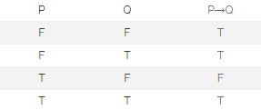
O bicondicional \(P \leftrightarrow Q\) é equivalente a \((P\to Q) \land (Q\to P)\):
| \(P\) | \(Q\) | \(P\leftrightarrow Q\) |
|---|---|---|
| F | F | T |
| F | T | F |
| T | F | F |
| T | T | T |
Foto do quadro
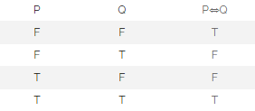
Proposição composta¶
Uma proposição composta é formada combinando variáveis proposicionais com operadores lógicos (ex.: \(P \land (Q \lor \lnot R)\)).
Variações do condicional¶
A partir de um condicional \(P \to Q\), podemos construir três proposições relacionadas, mas que não têm o mesmo valor de verdade entre si (exceto a contrapositiva):
| Nome | Forma | Equivalência |
|---|---|---|
| Contrapositiva | \(\lnot Q \to \lnot P\) | sempre equivalente a \(P \to Q\) |
| Conversa (recíproca) | \(Q \to P\) | não preserva o valor de verdade de \(P\to Q\) |
| Inversa | \(\lnot P \to \lnot Q\) | não preserva o valor de verdade de \(P\to Q\) |
Observações
- A negação de \(\le\) é \(>\) (e vice-versa).
- A precedência dos operadores lógicos (do mais "forte" ao mais "fraco") é:
| Operador | Precedência |
|---|---|
| \(\lnot\) | 1 |
| \(\oplus\) | 2 |
| \(\land\) | 3 |
| \(\lor\) | 4 |
| \(\to\) | 5 |
| \(\leftrightarrow\) | 6 |
Foto do quadro
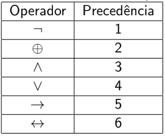
Equivalência Proposicional¶
Tautologia e contradição¶
Uma tautologia é uma proposição composta que é sempre verdadeira, independentemente do valor de suas variáveis.
Exemplo: \((p\to q)\lor(p\land\lnot q)\) é sempre T
| \(p\) | \(q\) | \(p\to q\) | \(\lnot q\) | \(p\land\lnot q\) | \((p\to q)\lor(p\land\lnot q)\) |
|---|---|---|---|---|---|
| F | F | T | T | F | T |
| F | T | T | F | F | T |
| T | F | F | T | T | T |
| T | T | T | F | F | T |
Independente de \(p\) e \(q\) serem T ou F, \((p\to q)\lor(p\land\lnot q)\) é T em todas as linhas da tabela-verdade.
Foto do quadro
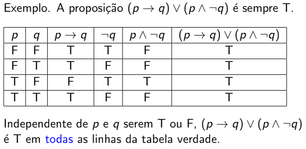
Uma contradição é uma proposição composta que é sempre falsa, independentemente do valor de suas variáveis.
Exemplo: \((p\land q)\land(\lnot p\lor\lnot q)\) é sempre F
| \(p\) | \(q\) | \(p\land q\) | \(\lnot p\) | \(\lnot q\) | \(\lnot p\lor\lnot q\) | \((p\land q)\land(\lnot p\lor\lnot q)\) |
|---|---|---|---|---|---|---|
| F | F | F | T | T | T | F |
| F | T | F | T | F | T | F |
| T | F | F | F | T | T | F |
| T | T | T | F | F | F | F |
Independente de \(p\) e \(q\) serem T ou F, \((p\land q)\land(\lnot p\lor\lnot q)\) é F em todas as linhas da tabela.
Foto do quadro
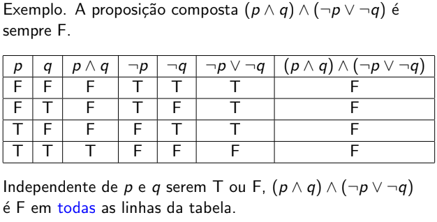
Equivalência lógica¶
Duas proposições \(p\) e \(q\) são logicamente equivalentes se elas possuem o mesmo valor em cada linha da tabela-verdade:
Exemplo: \((p\to q)\) e \((\lnot p \lor q)\) são logicamente equivalentes
| \(p\) | \(q\) | \(p\to q\) | \(\lnot p\) | \(\lnot p\lor q\) |
|---|---|---|---|---|
| F | F | T | T | T |
| F | T | T | T | T |
| T | F | F | F | F |
| T | T | T | F | T |
Toda vez que \((p\to q)\) é falso, \((\lnot p\lor q)\) também é; toda vez que \((p\to q)\) é verdadeiro, \((\lnot p\lor q)\) também é.
Foto do quadro
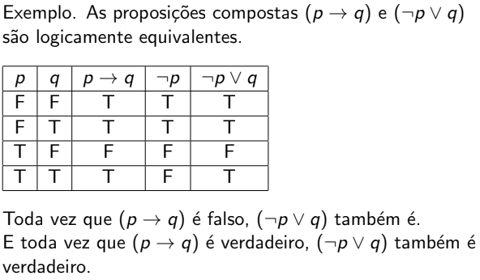
Note que \(p \leftrightarrow q\) é verdadeira exatamente quando \(p\) e \(q\) possuem o mesmo valor em todas as linhas (lembrando que \(p\) e \(q\) podem ser proposições compostas). Isso nos permite definir equivalência lógica em termos de tautologia: \(p\) e \(q\) são logicamente equivalentes se e somente se \(p \leftrightarrow q\) é uma tautologia.
Continuando o exemplo: \((p\to q)\leftrightarrow(\lnot p\lor q)\)
| \(p\) | \(q\) | \(p\to q\) | \(\lnot p\) | \(\lnot p\lor q\) | \((p\to q)\leftrightarrow(\lnot p\lor q)\) |
|---|---|---|---|---|---|
| F | F | T | T | T | T |
| F | T | T | T | T | T |
| T | F | F | F | F | T |
| T | T | T | F | T | T |
\((p\to q)\leftrightarrow(\lnot p\lor q)\) é sempre verdadeiro em cada linha da tabela-verdade — ou seja, é uma tautologia, logo \((p\to q) \equiv (\lnot p\lor q)\).
Foto do quadro
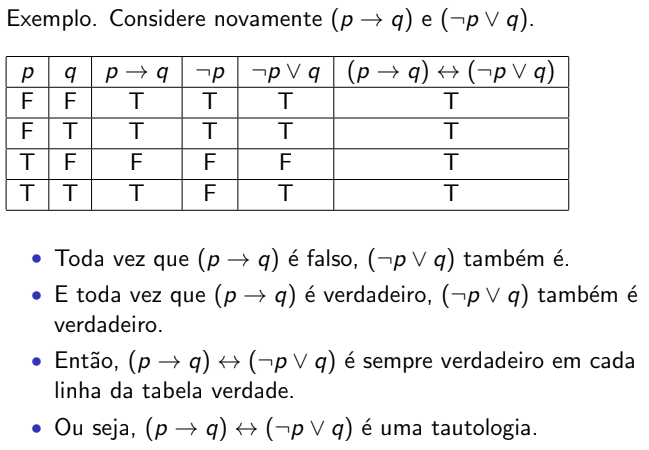
Usamos a notação \(p \equiv q\) como abreviação de "\((p \leftrightarrow q)\) é uma tautologia", ou "\(p\) é logicamente equivalente a \(q\)". O símbolo \(\equiv\) não é um operador lógico, e \((p \equiv q)\) não é uma proposição composta — é uma afirmação sobre duas proposições.
Como provar equivalência lógica¶
Há dois caminhos: construir a tabela-verdade completa de ambos os lados e compará-las, ou substituir trechos por proposições equivalentes usando as leis da lógica proposicional (De Morgan, distributividade, absorção, etc.) até transformar um lado no outro.
Leis da lógica proposicional:
| Equivalência | Nome |
|---|---|
| \(p\land T \equiv p\) \(p\lor F \equiv p\) |
Leis da identidade |
| \(p\lor T \equiv T\) \(p\land F \equiv F\) |
Leis de dominação |
| \(p\lor p \equiv p\) \(p\land p \equiv p\) |
Leis de idempotência |
| \(\lnot(\lnot p) \equiv p\) | Lei da dupla negação |
| \(p\lor q \equiv q\lor p\) \(p\land q \equiv q\land p\) |
Leis da comutatividade |
| \((p\lor q)\lor r \equiv p\lor(q\lor r)\) \((p\land q)\land r \equiv p\land(q\land r)\) |
Leis da associatividade |
| \(p\lor(q\land r) \equiv (p\lor q)\land(p\lor r)\) \(p\land(q\lor r) \equiv (p\land q)\lor(p\land r)\) |
Leis da distributividade |
| \(\lnot(p\land q) \equiv \lnot p\lor\lnot q\) \(\lnot(p\lor q) \equiv \lnot p\land\lnot q\) |
Leis de De Morgan |
| \(p\lor(p\land q) \equiv p\) \(p\land(p\lor q) \equiv p\) |
Leis de absorção |
| \(p\lor\lnot p \equiv T\) \(p\land\lnot p \equiv F\) |
Leis da negação |
| \(p\to q \equiv \lnot p\lor q\) \(p\to q \equiv \lnot q\to\lnot p\) \(p\lor q \equiv \lnot p\to q\) \(p\land q \equiv \lnot(p\to\lnot q)\) \(\lnot(p\to q) \equiv p\land\lnot q\) \((p\to q)\land(p\to r) \equiv p\to(q\land r)\) \((p\to r)\land(q\to r) \equiv (p\lor q)\to r\) \((p\to q)\lor(p\to r) \equiv p\to(q\lor r)\) \((p\to r)\lor(q\to r) \equiv (p\land q)\to r\) |
Condicional |
| \(p\leftrightarrow q \equiv (p\to q)\land(q\to p)\) \(p\leftrightarrow q \equiv \lnot p\leftrightarrow\lnot q\) \(p\leftrightarrow q \equiv (p\land q)\lor(\lnot p\land\lnot q)\) \(\lnot(p\leftrightarrow q) \equiv p\leftrightarrow\lnot q\) |
Se-e-somente-se |
Fotos do quadro
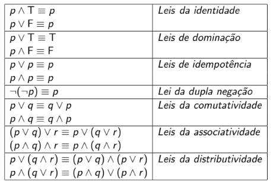
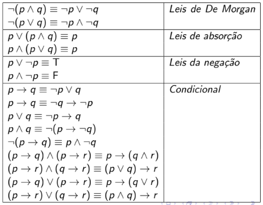
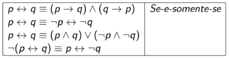
Exemplo: mostrar que \(\lnot(p\to q) \equiv (p\land\lnot q)\)
Foto do quadro
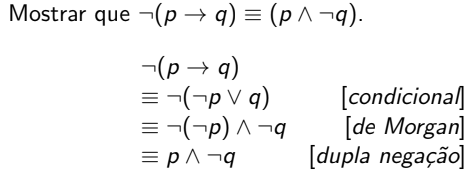
Predicados e Quantificadores¶
Predicados¶
Um predicado aparece em funções proposicionais do tipo $p(x) = $ "\(x\) é maior que \(3\)", onde \(x\) é a variável e "é maior que \(3\)" é o predicado. O valor-verdade da proposição depende do valor atribuído à variável.
Quantificadores¶
Quantificadores expressam até que ponto um predicado é verdadeiro dentro de um domínio.
Quantificador universal (\(\forall\)). É comum falarmos de propriedades válidas para todos os elementos de um domínio; o quantificador universal de \(p(x)\) afirma que \(p(x)\) é verdadeiro para todo valor de \(x\) nesse domínio. Notação: \(\forall x\, p(x)\), lido como "para todo \(x\) do domínio, \(p(x)\) é verdadeiro".
Foto do quadro
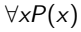
Exemplos
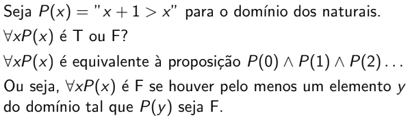
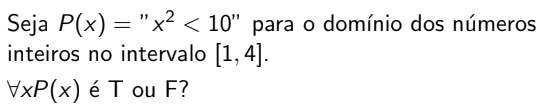
— neste caso, a proposição é falsa.Quantificador existencial (\(\exists\)). Afirma que existe pelo menos um elemento do domínio para o qual \(p(x)\) é verdadeiro. \(\exists x\, p(x)\) é falso somente se \(p(x)\) for falso para todos os elementos do domínio.
Foto do quadro
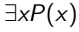
Exemplo
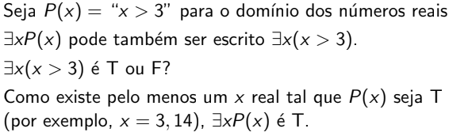
Lei de De Morgan para quantificadores¶
Negar um quantificador universal produz um existencial (da negação do predicado), e vice-versa:
Foto do quadro
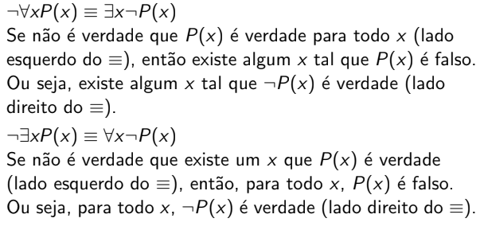
Prova Matemática¶
Uma prova de uma proposição é um argumento que demonstra que ela é verdadeira. Quando uma proposição é provada, ela passa a ser chamada de teorema. Toda teoria matemática precisa de um ponto de partida — proposições assumidas como verdadeiras sem demonstração, chamadas postulados ou axiomas — a partir das quais outras proposições são provadas.
Exemplo: axiomas de corpo de um conjunto \(A\)
- \(A_1\) (a adição é associativa): \(\forall a,b,c\in A\), \((a+b)+c = a+(b+c)\).
- \(A_2\) (a adição é comutativa): \(\forall a,b\in A\), \(a+b=b+a\).
- \(A_3\) (existe elemento neutro da adição): existe \(\alpha\in A\) tal que \(\alpha+x=x\), \(\forall x\in A\).
- \(A_4\) (todo elemento possui um simétrico): \(\forall a\in A\), existe \(a'\in A\) tal que \(a+a'=\alpha\).
- \(M_1\) (a multiplicação é associativa): \(\forall a,b,c\in A\), \((a\cdot b)\cdot c = a\cdot(b\cdot c)\).
- \(M_2\) (a multiplicação é comutativa): \(\forall a,b\in A\), \(a\cdot b=b\cdot a\).
- \(M_3\) (existe elemento neutro da multiplicação): existe \(e\in A\), com \(e\neq0\), tal que \(x\cdot e=x\), \(\forall x\in A\).
- \(AM\) (a multiplicação é distributiva com relação à adição): \(\forall a,b,c\in A\), \(a\cdot(b+c) = a\cdot b+a\cdot c\).
Foto do quadro
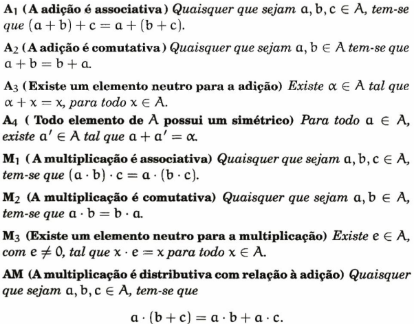
Tipos de prova¶
Desaprovando afirmações (contraexemplo). Basta encontrar uma situação em que a afirmação seja falsa.
Exemplo
Um colega disse que \(n^2+n+41\) é sempre primo. Para refutar, basta um contraexemplo: com \(n=41\),
que não é primo.
Prova exaustiva. Verificamos todas as possibilidades (só funciona quando o domínio é finito e pequeno).
Exemplo
Prove que \((n+1)^3 \ge 3^n\) se \(n\) é inteiro positivo com \(n \le 4\). Verificamos \(\forall n \in \{1,2,3,4\}\):
Provas por regras de inferência. Inferência é a operação pela qual afirmamos a verdade de uma proposição em decorrência de sua ligação com outras já reconhecidas como verdadeiras (teoremas, axiomas, leis de equivalência lógica).
Exemplos
Se \(x\) e \(y\) são pares, prove que \(x+y\) é par.
Assuma \(x,y\) inteiros pares. Como \(x\) é par, existe \(k \in \mathbb{Z}\) tal que \(x=2k\); similarmente, \(y=2k'\). Logo \(x+y = 2k+2k' = 2(k+k')\), que é par.
Se \(x\) e \(y\) são ímpares, prove que \(x+y\) é par.
Como \(x\) é ímpar, \(x=2k+1\); como \(y\) é ímpar, \(y=2k'+1\). Logo \(x+y = 2k+1+2k'+1 = 2(k+k'+1)\), que é par.
Prova direta. Para provar \(P\to Q\): supomos \(P\) como verdade (hipótese) e, após uma sequência finita de passos lógicos, chegamos a \(Q\). Uma vez provada a implicação, não importa mais se \(P\) em si é verdadeira ou falsa — a suposição é descartada.
Prova por contrapositiva (prova indireta). Como \(P\to Q \equiv \lnot Q \to \lnot P\), às vezes é mais fácil provar a contrapositiva do que a proposição original.
Exemplos
Para qualquer inteiro \(n\), se \(n^2\) é par, então \(n\) é par.
A contrapositiva é: se \(n\) é ímpar, então \(n^2\) é ímpar. Como \(n\) é ímpar, \(n=2k+1\), logo
que é ímpar. ✓
Se \(n=ab\), então \(a \le \sqrt{n}\) ou \(b \le \sqrt{n}\).
A contrapositiva é: se \(a>\sqrt{n}\) e \(b>\sqrt{n}\), então \(ab \neq n\). Tomando \(a,b\) com \(a>\sqrt n\) e \(b>\sqrt n\): \(a\cdot b > \sqrt n \cdot \sqrt n = n\), logo \(ab \neq n\). ✓
Provas de equivalência. Para provar \(P \leftrightarrow Q\), usamos \(P \leftrightarrow Q \equiv (P\to Q) \land (Q\to P)\) e construímos uma prova para cada uma das duas implicações.
Exemplo
Para qualquer inteiro \(n\), \(n\) é par se e somente se \(n^2\) é par.
(⇒) Se \(n\) é par, \(n=2k\), logo \(n^2=4k^2=2(2k^2)\), que é par.
(⇐) Usamos a contrapositiva (mais fácil): se \(n\) é ímpar, \(n=2k+1\), logo \(n^2 = 4k^2+4k+1 = 2(2k^2+2k)+1\), que é ímpar — logo, se \(n^2\) é par, \(n\) é par.
Provas por contradição (redução ao absurdo). Assumimos o oposto do que queremos provar; ao chegar a uma contradição, a prova está concluída.
Exemplos
Prove que "se \(3n+2\) é ímpar, então \(n\) é ímpar".
Assumimos o oposto: \(3n+2\) é ímpar e \(n\) é par. Como \(n\) é par, \(n=2k\), logo
que é par — contradizendo a hipótese de que \(3n+2\) é ímpar. Absurdo! Logo, a afirmação original é verdadeira.
Prove que \(\sqrt{2}\) é irracional.
Assuma que \(\sqrt{2}\) é racional, isto é, \(\sqrt{2} = p/q\) com \(p,q \in \mathbb{Z}\), \(q \neq 0\), e a fração já simplificada ao máximo (sem fatores comuns). Então:
Se \(p=2k\), então \((2k)^2 = 2q^2 \Rightarrow q^2 = 2k^2\), logo \(q^2\) também é par, e portanto \(q\) é par. Mas se \(p\) e \(q\) são ambos pares, a fração não poderia estar simplificada ao máximo — contradição. Logo, \(\sqrt{2}\) não é racional.
Provas por casos. Quando existe um conjunto de casos possíveis e sabemos que pelo menos um deles é verdadeiro (mas não sabemos qual), provamos a afirmação separadamente em cada caso.
Exemplos
Prove que, para qualquer inteiro \(n\), \(n \le n^2\).
- Caso 1 (\(n \ge 1\)): \(n^2 \ge n\).
- Caso 2 (\(n=0\)): \(0^2 \ge 0\).
- Caso 3 (\(n \le -1\)): \(n^2 \ge n\) (pois \(n^2 \ge 0 > n\)).
Os três casos cobrem todos os inteiros, logo a afirmação é verdadeira.
Existem números irracionais \(x\) e \(y\) tais que \(x^y\) é racional.
Considere \(x=y=\sqrt{2}\). Há dois casos: \(\sqrt{2}^{\sqrt{2}}\) é racional, ou é irracional.
- Se \(\sqrt{2}^{\sqrt{2}}\) é racional, encontramos o exemplo diretamente.
- Se \(\sqrt{2}^{\sqrt{2}}\) é irracional, tome \(x = \sqrt{2}^{\sqrt{2}}\) e \(y=\sqrt{2}\): então \(x^y = (\sqrt{2}^{\sqrt{2}})^{\sqrt{2}} = \sqrt{2}^2 = 2\), que é racional.
Prova não construtiva
Mesmo após concluir a prova, não sabemos qual dos dois casos é verdadeiro, logo não conseguimos exibir explicitamente os números irracionais que satisfazem o teorema. Esse é um exemplo de prova não construtiva: um teorema existencial foi provado sem construir um exemplo concreto.
Prova por indução. Geralmente usada para provar afirmações do tipo "\(\forall n \in \mathbb{N}, P(n)\)". Tem dois passos:
- Passo base: mostramos que \(P(1)\) (ou \(P(0)\)) é verdadeiro.
- Passo indutivo: mostramos que, se \(P(k)\) é verdadeiro, então \(P(k+1)\) também é.
Exemplo: a soma dos \(n\) primeiros números ímpares é igual a \(n^2\)
Passo base (\(P(1)\)): \(1 = 1^2\). Verdadeiro.
Passo indutivo (\(P(k) \to P(k+1)\)): suponha que \(P(k)\) é verdadeiro, isto é,
Somando \(2k+1\) aos dois lados:
que é exatamente \(P(k+1)\). Logo, por indução, \(P(n)\) vale para todo \(n \ge 1\).
Mais exemplos de indução
Prove que, para \(n \ge 1\), \(1+2^1+2^2+\dots+2^n = 2^{n+1}-1\):
Passo base \(P(1)\): \(1+2 = 2^{1+1}-1\), que é verdade.
Passo indutivo: assumindo que \(P(k)\): \(1+2+\dots+2^k = 2^{k+1}-1\) é verdade, queremos chegar em \(P(k+1)\): \(1+2+\dots+2^k+2^{k+1} = 2^{k+2}-1\). Somamos \(2^{k+1}\) nos dois lados de \(P(k)\):
que é exatamente \(P(k+1)\) — logo provamos \(P(n)\).
Prove que, para \(n\ge1\), \(2^n > n\):
Passo base \(P(1)\): \(1\ge1\), \(2^1 > 1\), verdade.
Passo indutivo: assumindo \(P(k)\): \(k\ge1\), \(2^k>k\) verdade, queremos chegar em \(P(k+1)\): \(k+1\ge1\), \(2^{k+1}>k+1\). Multiplicamos \(P(k)\) por \(2\): \(2^k\cdot2^1 > 2\cdot k \Rightarrow 2^{k+1}>2k\). Como \(2k = k+k\) e \(k\ge1 \Rightarrow k+k\ge k+1\), concluímos \(2^{k+1}>2k\ge k+1\), logo \(2^{k+1}>k+1\).
Prove que, para \(n\ge4\), \(n^2>3n\):
Passo base \(P(4)\): \(4\ge4\), \(4^2>3\cdot4\) (ou seja, \(16>12\)), verdade.
Passo indutivo: assumindo \(P(k)\): \(k\ge4\), \(k^2>3k\) verdade, queremos chegar em \(P(k+1)\): \(k+1\ge4\), \((k+1)^2>3(k+1)\). Somamos \(2k+1\) em \(P(k)\): \(k^2+2k+1 > 3k+2k+1 \Rightarrow (k+1)^2 > 5k+1\). Como \(k\ge4\ge1\), temos \(k\ge1 \Rightarrow 2k\ge2 \Rightarrow 5k+1\ge3k+3\). Logo \((k+1)^2 > 5k+1 \ge 3k+3 = 3(k+1)\).
Prove que, para \(n>1\), \(2^{n+1} < 3^n\):
Passo base \(P(2)\): \(2>1\), \(2^3<3^2\) (ou seja, \(8<9\)), verdade.
Passo indutivo: assumindo \(P(k)\): \(k>1\), \(2^{k+1}<3^k\) verdade, queremos chegar em \(P(k+1)\): \(k+1>1\), \(2^{k+2}<3^{k+1}\). Multiplicamos \(P(k)\) por \(2\): \(2\cdot2^{k+1} < 3^k\cdot2 \Rightarrow 2^{k+2} < 3^k\cdot2\). Como \(2<3\), podemos afirmar que \(3^k\cdot2 < 3^k\cdot3 = 3^{k+1}\), logo \(2^{k+2} < 3^{k+1}\).
Prove que, para \(n\in\mathbb{Z}^+\), \(2^{2n}-1\) é divisível por \(3\):
Passo base \(P(1)\): \(2^2-1 = 3\), divisível por \(3\). ✓
Passo indutivo: assumindo \(P(k)\): \(2^{2k}-1 = 3q\) (para algum \(q\)) verdade, queremos chegar em \(P(k+1)\): \(2^{2(k+1)}-1 = 3q'\). Multiplicamos \(P(k)\) por \(4\): \(4(2^{2k}-1) = 4(3q) \Rightarrow 2^{2k+2}-4 = 3\cdot4q\). Somando \(3\) (i.e., somando \(3\) a ambos os lados): \(2^{2k+2}-1 = 3(4q+1) = 3q'\), com \(q'=4q+1\) — logo \(2^{2(k+1)}-1\) também é divisível por \(3\).
Prove que a soma dos \(n\) primeiros números inteiros é igual a \(\dfrac{n(n+1)}{2}\):
Passo base \(P(1)\): \(1 = \dfrac{1(1+1)}{2}\). ✓
Passo indutivo: assumindo \(P(k)\): \(1+2+\dots+k = \dfrac{k(k+1)}{2}\) verdade, queremos chegar em \(P(k+1)\): \(1+2+\dots+k+(k+1) = \dfrac{(k+1)(k+2)}{2}\). Somamos \((k+1)\) em \(P(k)\):
que é exatamente \(P(k+1)\).
Fotos do quadro (todas as resoluções acima)
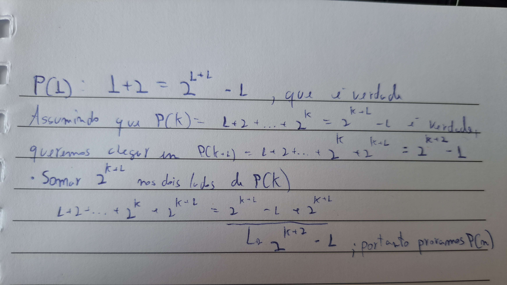
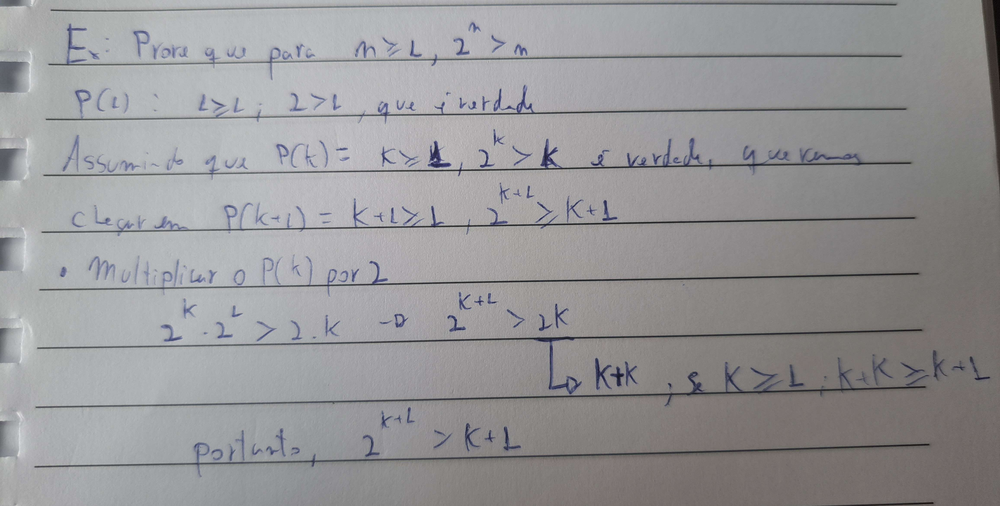
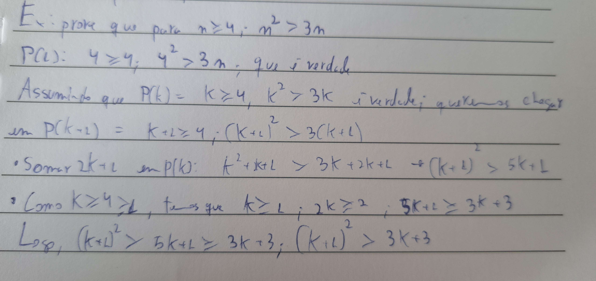
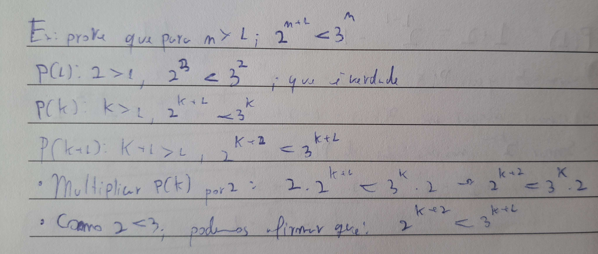
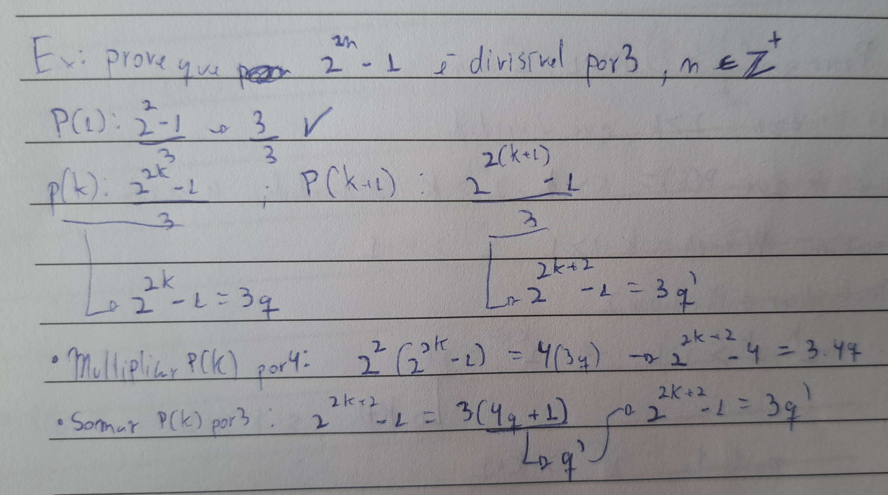
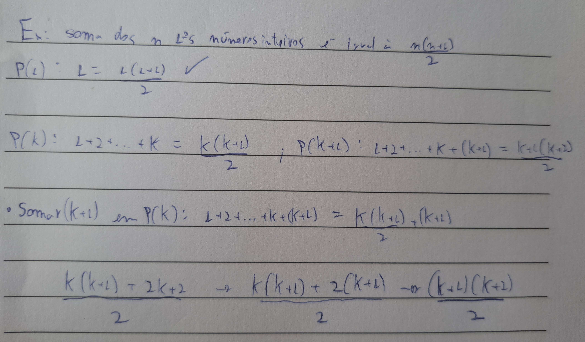
Prove que o conjunto das partes de um conjunto com \(n\) elementos possui \(2^n\) elementos:
Caso base: \(|A|=0\), então \(P(A)=\{\varnothing\}\), logo \(P(A)\) possui apenas um elemento, \(2^0=1\).
Hipótese indutiva: se \(A\) tem \(n\) elementos, então \(P(A)\) tem \(2^n\) elementos. Assumindo isso verdade, provamos que, se \(|B|=n+1\), então \(|P(B)|=2^{n+1}\): como \(|B|=n+1\), podemos escrevê-lo na forma \(B = A \cup \{b\}\) (onde \(b\) é um elemento a mais que \(A\)). Para cada subconjunto \(S\) de \(A\) existem \(2\) subconjuntos de \(B\): \(S\) e \(S\cup\{b\}\). Logo \(|P(B)| = 2\cdot|P(A)| = 2\cdot2^n = 2^{n+1}\).
Foto do quadro
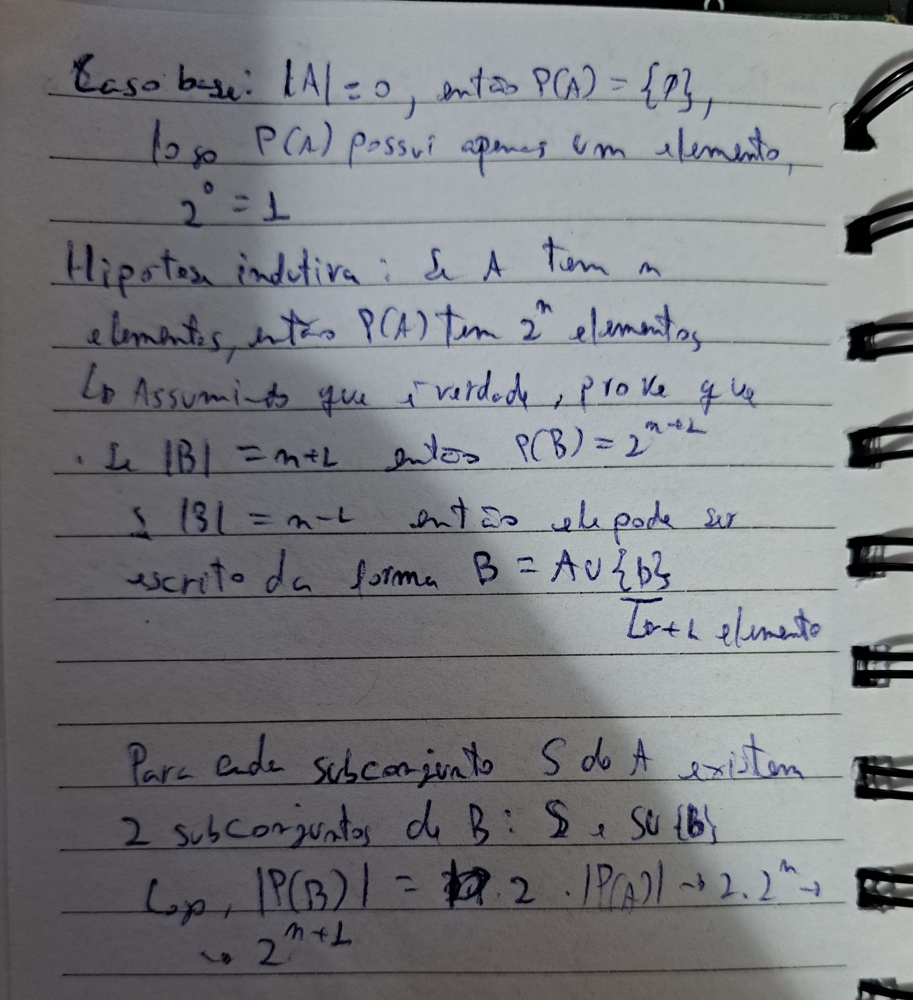
Fazendo conjecturas. Antes de provar por indução, muitas vezes é preciso primeiro conjecturar (adivinhar) a fórmula geral observando padrões em casos pequenos. Podemos então usar o princípio da indução matemática para provar que a conjectura é verdadeira para todos os inteiros positivos.
Exemplo
Encontre uma fórmula para \(\dfrac{1}{2}+\dfrac{1}{4}+\dfrac{1}{8}+\dots+\dfrac{1}{2^n}\).
Foto do quadro
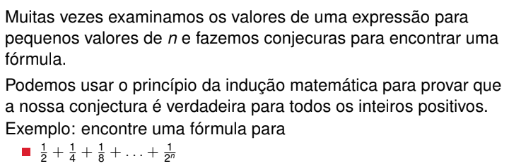
Definições recursivas¶
Usamos definições recursivas em funções, operações, algoritmos, conjuntos e sequências: a definição se refere a si mesma em casos "menores", com um caso base que interrompe a recursão. As definições recursivas são compostas de duas partes:
- Base: onde alguns casos simples do item que está sendo definido são dados explicitamente.
- Passo indutivo (ou recursivo): onde os demais casos do item sendo definido são dados em função dos casos anteriores.
Foto do quadro
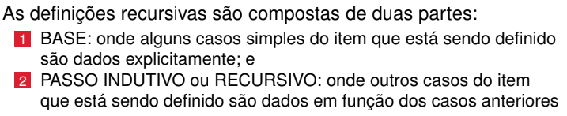
Exemplo
Encontre \(f(1)\), \(f(2)\) e \(f(3)\) se \(f(n)\) é definida recursivamente por \(f(0)=1\) e, para \(n=0,1,2,3,\dots\):
- \(f(n+1)=f(n)+2\)
- \(f(n+1)=3f(n)\)
- \(f(n+1)=2^{f(n)}\)
- \(f(n+1)=f(n)^2+f(n)+1\)
Caso 1: \(f(1)=f(0)+2=3\), \(f(2)=f(1)+2=5\), \(f(3)=f(2)+2=7\).
Caso 2: \(f(1)=3f(0)=3\), \(f(2)=3f(1)=9\), \(f(3)=3f(2)=27\).
Caso 3: \(f(1)=2^{f(0)}=2\), \(f(2)=2^{f(1)}=4\), \(f(3)=2^{f(2)}=16\).
Caso 4: \(f(1)=f(0)^2+f(0)+1=3\), \(f(2)=f(1)^2+f(1)+1=13\), \(f(3)=f(2)^2+f(2)+1=183\).
Fotos do quadro
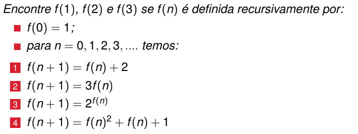
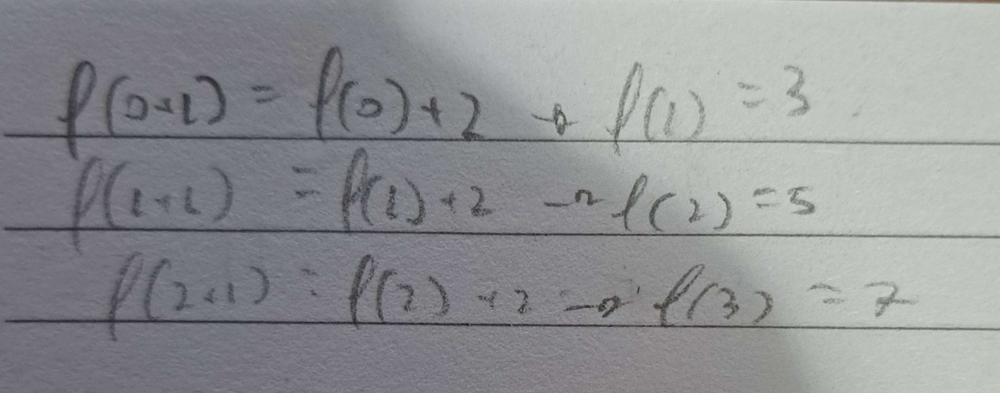
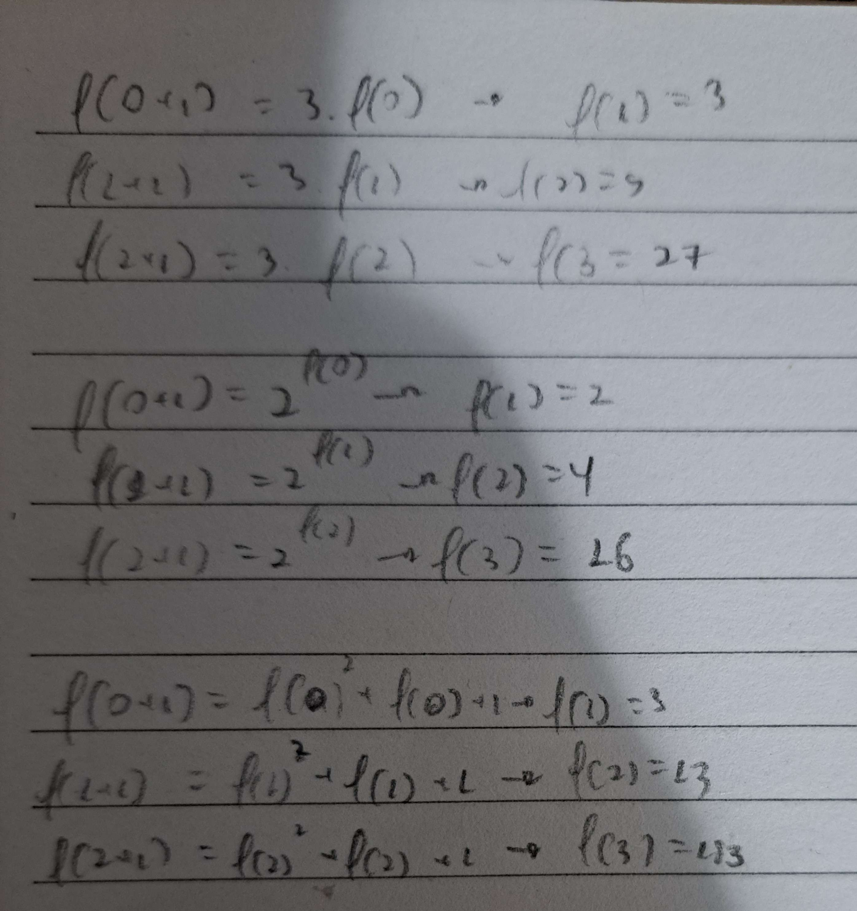
Sequência de Fibonacci. Clássico exemplo de definição recursiva: cada termo é a soma dos dois anteriores. Existem muitas relações interessantes válidas para os números de Fibonacci — por exemplo, a soma dos \(n\) primeiros números de Fibonacci:
Foto do quadro
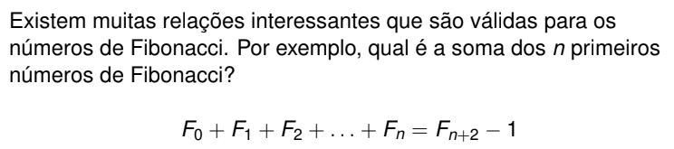
Exemplo: prove que \(F_{3n}\) é par
Passo indutivo: \(F_{3n+3} = F_{3n+2}+F_{3n+1} = (F_{3n+1}+F_{3n})+F_{3n+1} = F_{3n}+2F_{3n+1}\). Por hipótese de indução, \(F_{3n}\) é par; e \(2F_{3n+1}\) é par por construção (é um múltiplo de \(2\)). Logo a soma \(F_{3n}+2F_{3n+1} = F_{3(n+1)}\) também é par.
Fotos do quadro
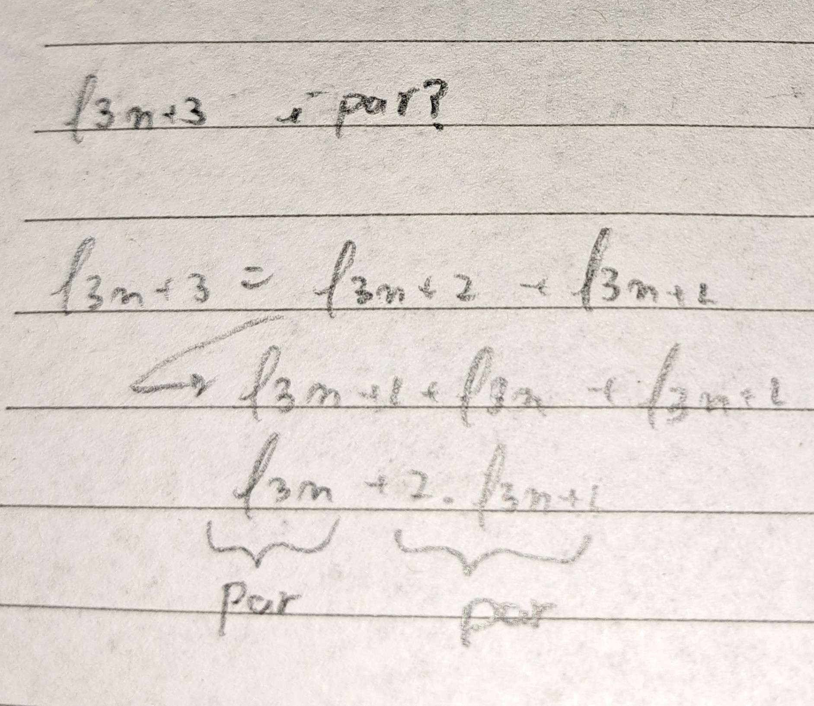
Exemplo: prove que \(F_{5n}\) é divisível por \(5\)
Passo indutivo: expandindo \(F_{5m+5}\) sucessivamente pela recorrência de Fibonacci até restar apenas termos de índice \(5m\) ou \(5m+1\) (usando a hipótese de indução de que \(F_{5m}\) é divisível por \(5\)), chega-se a
onde o primeiro termo é divisível por \(5\) por ter o fator \(5\) explícito, e o segundo é divisível por \(5\) pela hipótese de indução — logo a soma também é divisível por \(5\).
Foto do quadro
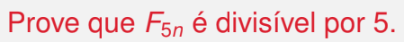
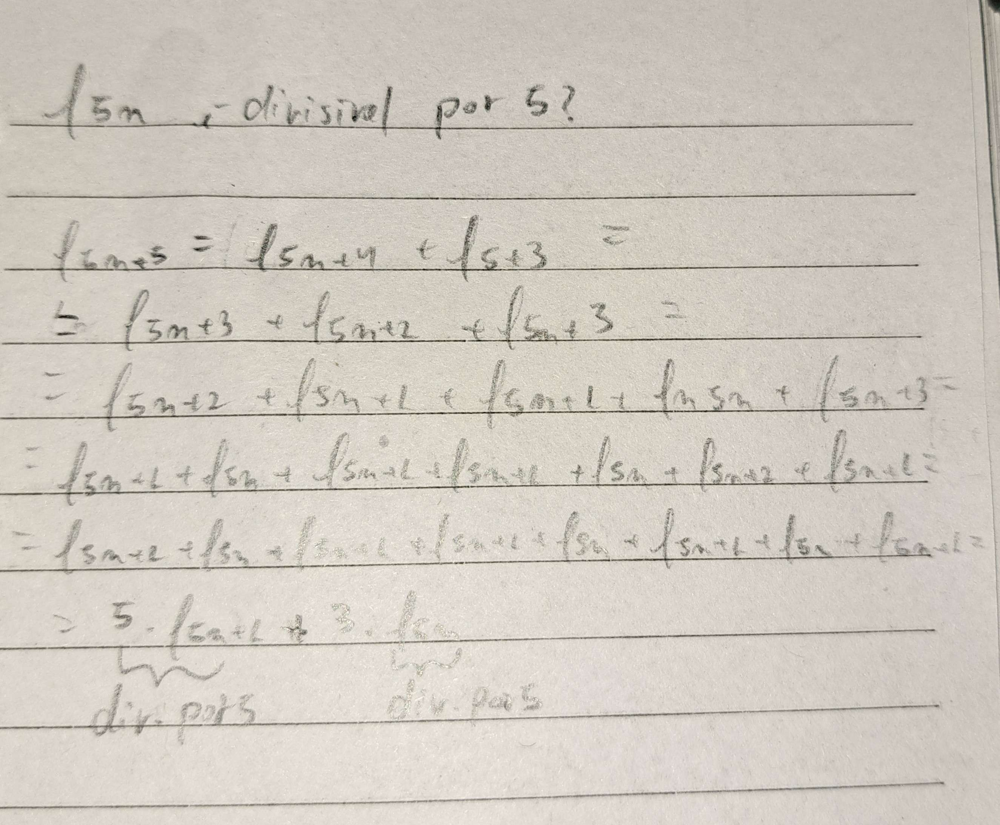
Conjuntos¶
Um conjunto é uma coleção desordenada de objetos, sem repetição de elementos (listar o mesmo elemento duas vezes não muda o conjunto):
Notações básicas:
- \(a \in A\): o elemento \(a\) pertence ao conjunto \(A\).
- \(a \notin A\): o elemento \(a\) não pertence ao conjunto \(A\) (formalmente, \(a\notin A \equiv \lnot(a\in A)\)).
- \(A \subset B\): todos os elementos de \(A\) estão em \(B\), mas \(A \neq B\) (subconjunto próprio).
- \(A \subseteq B\): todos os elementos de \(A\) estão em \(B\), podendo \(A = B\).
Em conjuntos de conjuntos, os elementos ficam sempre separados pelas vírgulas mais externas:
Foto do quadro
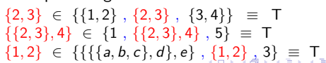
Fotos do quadro
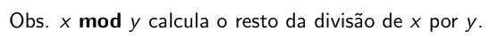
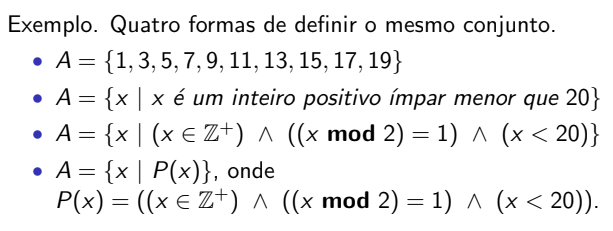
Dois conjuntos \(A\) e \(B\) são iguais se e somente se \(\forall x\,(x\in A \leftrightarrow x\in B)\).
Conjunto vazio¶
O conjunto vazio, sem nenhum elemento, é representado por \(\{\}\) ou \(\varnothing\).
Propriedades:
- \(x \in \varnothing \equiv F\) (nunca é verdade)
- \(\varnothing = \{x \mid F\}\)
Atenção
\(\{\varnothing\}\) e \(\varnothing\) são coisas diferentes: \(\varnothing\) é o conjunto vazio, enquanto \(\{\varnothing\}\) é um conjunto que contém o conjunto vazio como seu único elemento (portanto tem cardinalidade \(1\), não \(0\)).
Subconjuntos¶
\(A\) é subconjunto de \(B\) se e somente se \(\forall x\,(x\in A \to x\in B)\). Se \(A \subseteq B\) e \(A \neq B\), dizemos que \(A\) é subconjunto próprio de \(B\).
Foto do quadro
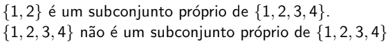
Foto do quadro
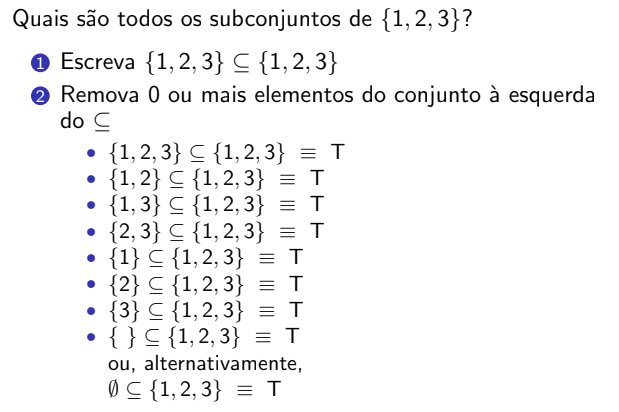
Se \(P(S)\) é o conjunto das partes de \(S\) e \(n\) é o número de elementos de \(S\), então \(|P(S)| = 2^n\). O conjunto vazio está contido em todo conjunto.
Propriedades:
- Para todo conjunto \(S\): \(\varnothing \subseteq S\) e \(S \subseteq S\).
- \(A = B \equiv (A\subseteq B) \land (B\subseteq A)\).
- Um conjunto é finito se contém \(n\) elementos distintos, com \(n \ge 0\); é infinito se não é finito.
Cardinalidade¶
Para um conjunto finito \(S\), \(|S|\) denota a cardinalidade de \(S\), isto é, a quantidade de elementos distintos.
Exemplos
- \(|\{5,2,89\}| = 3\)
- \(|\{1,1,1,1,1,1,2\}| = 2\) (repetições não contam)
- \(|\{\varnothing\}| = 1\) — cuidado: é um conjunto com um elemento (o vazio), não o próprio vazio.
- \(|\{\{1,2,3\}, \varnothing, \{5,6,7,\dots\}\}| = 3\) — aqui contamos os três elementos do conjunto externo (dois dos quais são, eles próprios, conjuntos).
Conjunto das partes¶
O conjunto das partes de \(S\), denotado \(P(S)\), contém todos os subconjuntos de \(S\) (incluindo \(\varnothing\) e o próprio \(S\)).
Exemplos
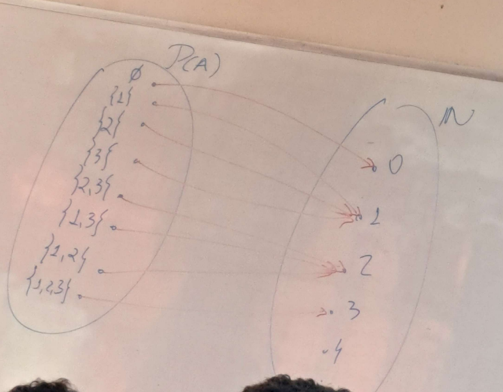
Conjunto universo¶
O conjunto universo \(U\) é o conjunto com todos os elementos relevantes ao problema que estamos tratando.
Tuplas¶
Uma tupla é um conjunto ordenado de elementos — a ordem importa. \((1,2,3)\) e \((3,2,1)\) são tuplas de 3 elementos diferentes entre si, já que seus primeiros elementos diferem.
Produto cartesiano¶
O produto cartesiano \(A \times B\) é o conjunto de todos os pares ordenados \((a,b)\) com \(a\in A\) e \(b\in B\).
Fotos do quadro
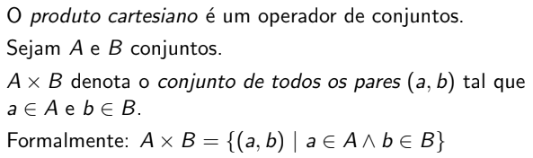
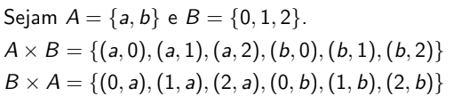
Um subconjunto de um produto cartesiano é chamado de relação (voltaremos a isso mais adiante).
Propriedades:
Foto do quadro
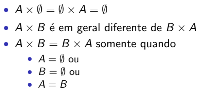
O número de elementos do produto cartesiano é o produto das cardinalidades: se \(|A|=m\), \(|B|=n\), \(|C|=o\), então \(|A\times B \times C| = m\cdot n\cdot o\).
Operadores de conjuntos¶
União (\(A\cup B\)): elementos que estão em \(A\) ou em \(B\) (ou ambos).
Foto do quadro
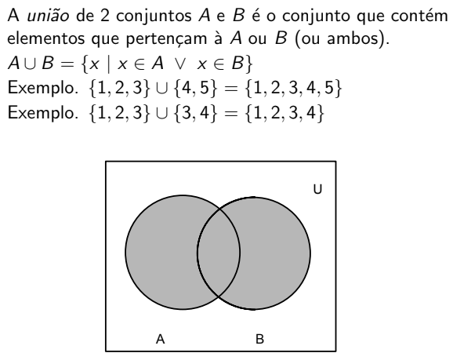
Propriedade:
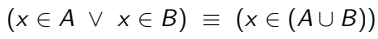
— o "ou" (\(\lor\)) lógico corresponde à união (\(\cup\)) de conjuntos.Exemplo de prova
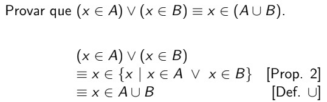
Interseção (\(A\cap B\)): elementos que estão em \(A\) e em \(B\) simultaneamente.
Foto do quadro
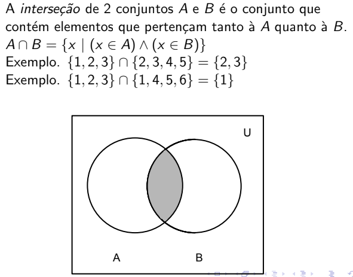
Propriedade:
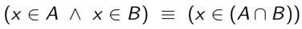
— o "e" (\(\land\)) lógico corresponde à interseção (\(\cap\)) de conjuntos.Conjuntos disjuntos. \(A\) e \(B\) são disjuntos se \(A \cap B = \varnothing\).
Exemplo
\(\{1,2,3,4\}\) e \(\{5,6,7,8,9,10\}\) são disjuntos.
Cardinalidade da união. \(|A\cup B| = |A|+|B|-|A\cap B|\), pois os elementos de \(A\cap B\) seriam contados duas vezes se simplesmente somássemos \(|A|+|B|\).
Diferença (\(A - B\), complemento de \(B\) em relação a \(A\)): elementos de \(A\) que não estão em \(B\).
Exemplo
\(\{1,2,3,4\} - \{2,3\} = \{1,4\}\)
Propriedade:
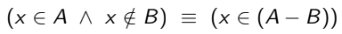
Complemento (\(\bar{A}\) ou \(A^c\)): elementos do universo \(U\) que não estão em \(A\), isto é, \(U - A\).
Foto do quadro
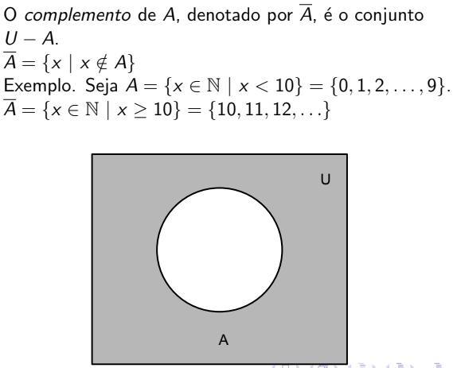
Propriedade:
Lógica em conjuntos. As operações de conjuntos espelham diretamente os operadores lógicos, trocando "pertence a \(A\)" por uma proposição \(p\) e "pertence a \(B\)" por \(q\):
Fotos do quadro
Exemplos
União generalizada. É a união de \(n\) conjuntos ao mesmo tempo.
Foto do quadro
Exemplo
Interseção generalizada. É a interseção de \(n\) conjuntos ao mesmo tempo.
Foto do quadro
Exemplos
— resposta: conjunto vazio.
— resposta: \(3\).
Funções¶
Uma função \(f\) de \(A\) para \(B\) relaciona cada elemento de \(A\) a exatamente um elemento de \(B\).
Fotos do quadro
\(A\) é o domínio de \(f\) e \(B\) é o contradomínio de \(f\). O conjunto imagem de \(f\) é formado por todo elemento de \(B\) que de fato se relaciona com algum elemento de \(A\).
Foto do quadro
Se \(f(x)=y\), dizemos que \(y\) é a imagem de \(x\), e \(x\) é a pré-imagem de \(y\). Duas funções são iguais se possuem o mesmo domínio, contradomínio, e associam cada elemento da mesma forma.
Classificação de funções¶
Função injetiva (injetora). Elementos diferentes do domínio sempre têm imagens diferentes — nunca dois elementos "colidem" na mesma imagem.
Foto do quadro
Função sobrejetiva (sobrejetora). Todo elemento do contradomínio é imagem de pelo menos um elemento do domínio — a imagem coincide com o contradomínio inteiro.
Foto do quadro
Foto do quadro
Função bijetiva (bijetora). É simultaneamente injetiva e sobrejetiva.
Foto do quadro
A função identidade é um exemplo clássico de função bijetiva.
Função inversa¶
Uma função \(f\) possui inversa \(f^{-1}\) se e somente se \(f\) é bijetiva. A inversa desfaz exatamente o que \(f\) faz.
Fotos do quadro
Exemplo
A função \(g^{-1}\): \(g^{-1}(50)=a\), \(g^{-1}(20)=b\), \(g^{-1}(60)=c\), \(g^{-1}(10)=d\), \(g^{-1}(30)=e\), \(g^{-1}(40)=f\).
Função composta¶
Fotos do quadro
Exemplo
Resposta: \((g\circ f)\) não possui inversa, pois toda função inversa pressupõe uma bijeção. Nesse caso, \(g\circ f: A\to C\) tem \(A\) e \(C\) com dois elementos cada, mas a função resultante é sobrejetiva sem ser injetiva — não é uma bijeção, logo não possui inversa.
Outras funções importantes¶
Função floor (piso), \(\lfloor x \rfloor\): o maior inteiro menor ou igual a \(x\).
Foto do quadro
Exemplo
\(\lfloor 1/2 \rfloor = 0\), \(\lfloor -2 \rfloor = -2\), \(\lfloor -1/2 \rfloor = -1\).
Função ceiling (teto), \(\lceil x \rceil\): o menor inteiro maior ou igual a \(x\).
Foto do quadro
Exemplo
\(\lceil 1/2 \rceil = 1\), \(\lceil -2 \rceil = -2\), \(\lceil -1/2 \rceil = 0\).
Propriedades de floor e ceiling:
Fotos do quadro
Sequências e somatórios¶
Uma sequência é uma lista ordenada de termos, geralmente dada por uma fórmula, denotada \(a_n\).
Exemplo
Para \(a_n = 1/n\): \(a_1=1\), \(a_2=1/2\), \(a_3=1/3\), ...
Sequências podem ser aritméticas (diferença constante entre termos) ou geométricas (razão constante entre termos). A sequência de Fibonacci é um exemplo de sequência recursiva, onde cada termo é calculado em função de termos anteriores.
Sequências infinitas¶
Uma sequência infinita tem uma quantidade ilimitada de termos. Infinitos, porém, não são todos "do mesmo tamanho": conjuntos infinitos podem ser enumeráveis ou não enumeráveis.
Conjuntos enumeráveis. Um conjunto é enumerável se é finito, ou se existe uma bijeção entre ele e o conjunto dos naturais.
-
Naturais, naturais não nulos e pares não nulos. Esses três conjuntos têm a mesma cardinalidade: existe uma bijeção entre cada natural e um par não nulo (por exemplo \(n \mapsto 2n\)):
Logo, \(\text{card}(\mathbb{N}) = \text{card}(\text{pares não nulos})\) — mesmo os pares sendo "metade" dos naturais intuitivamente, em cardinalidade infinita eles têm o mesmo tamanho.
-
Inteiros. Também são enumeráveis, por uma bijeção que alterna entre positivos e negativos:
Logo, \(\text{card}(\mathbb{Z}) = \text{card}(\mathbb{N})\).
-
Racionais. Também são enumeráveis. A prova clássica arranja os racionais em uma "matriz" (numerador na linha, denominador na coluna) e percorre essa matriz em diagonais, listando todos os racionais em sequência:
Como é possível enumerá-los dessa forma, \(\text{card}(\mathbb{Q}) = \text{card}(\mathbb{N})\).
Conjuntos não enumeráveis. O conjunto dos reais (que abrange racionais e irracionais) é não enumerável. A prova clássica é por absurdo, usando o argumento da diagonal de Cantor:
- Suponha, por absurdo, que o conjunto dos reais é enumerável.
-
Observe o intervalo \((0,1)\) e liste números reais aleatoriamente, um para cada natural:
-
Construa um novo número tomando o \(i\)-ésimo dígito decimal do \(i\)-ésimo número da lista, e somando \(1\) a cada dígito (com \(9+1=0\)):
-
Esse número construído difere do primeiro número da lista no primeiro dígito, do segundo no segundo dígito, e assim por diante — logo ele não pode estar na lista.
- Portanto, existe pelo menos um real que não foi associado a nenhum natural: a lista não é sobrejetiva (nem bijetiva), e o conjunto dos reais não é enumerável. Logo, \(\text{card}(\mathbb{R}) > \text{card}(\mathbb{N})\).
Números transfinitos. Associamos à cardinalidade dos naturais, inteiros e racionais um número transfinito chamado aleph-null, \(\aleph_0\) (uma forma rigorosa de "contar" conjuntos infinitos, com suas próprias regras de aritmética):
De acordo com a hipótese do contínuo de Cantor, a cardinalidade de \(P(\mathbb{N})\) é maior que a de \(\mathbb{N}\): \(2^{\aleph_0} > \aleph_0\). Além disso, a cardinalidade de \(P(\mathbb{N})\) é igual à cardinalidade dos reais, logo \(2^{\aleph_0} = \aleph_1\). Essa lógica se estende indefinidamente: \(2^{\aleph_1} = \aleph_2\), e assim por diante. Associamos à cardinalidade dos reais o transfinito aleph-one, \(\aleph_1\) (ou \(2^{\aleph_0}\)). Não existe nenhum número "entre" \(|\mathbb{N}|\) e \(|\mathbb{R}|\), ou seja, entre \(\aleph_0\) e \(\aleph_1\).
Somatório¶
O índice de soma indica a variável que percorre os valores a serem somados, junto com seus limites inferior e superior:
Foto do quadro
Análise combinatória¶
Princípios básicos da contagem¶
Uma regra mnemônica útil: "ou" soma e "e" multiplica.
Regra do produto. Se uma tarefa pode ser dividida em etapas sucessivas e independentes, com \(n_1\) opções na primeira, \(n_2\) na segunda, etc., o número total de formas de realizar a tarefa é \(n_1 \cdot n_2 \cdot \dots \cdot n_k\).
Fotos do quadro
Regra da soma. Se uma tarefa pode ser feita de \(n_1\) formas ou de \(n_2\) formas (categorias mutuamente exclusivas), o número total é \(n_1+n_2\).
Foto do quadro
Exemplos
Princípio da inclusão-exclusão (caso de 2 conjuntos). Usa a ideia de cardinalidade da união de conjuntos para evitar contar duplicado:
Fotos do quadro
Exemplo
Permutação, arranjo e combinação¶
| Conceito | A ordem importa? | Usa todos os elementos? |
|---|---|---|
| Permutação | Sim | Sim |
| Arranjo | Sim | Não (subconjuntos ordenados) |
| Combinação | Não | Não (subconjuntos) |
Permutação. Agrupa todos os elementos do conjunto, e a ordem importa.
Fotos do quadro
Arranjo. Agrupa apenas parte dos elementos (um número de subconjuntos ordenados), diferente da permutação, que usa todos.
Fotos do quadro
Combinação. Agrupa um determinado número de elementos, mas a ordem não importa.
Foto do quadro
Foto do quadro
Binômio de Newton¶
Termo geral.
Foto do quadro
Expandindo o binômio:
Foto do quadro
Exemplo
Observações importantes
- Em \((x-y)^n\), é o expoente ímpar do \(y\) que determina o sinal negativo do termo.
- Se a questão pedir um termo "inválido" (fora do intervalo de expoentes possíveis), o coeficiente correspondente é zero.
- Para saber a soma de todos os coeficientes de uma expansão, basta substituir todas as variáveis por \(1\).
Exemplo
Triângulo de Pascal:
Foto do quadro
Igualdades importantes do binômio:
Foto do quadro
Prova
Foto do quadro
Foto do quadro
Prova
Foto do quadro
Prova
Foto do quadro
Com o auxílio do triângulo de Pascal:
Identidade de Vandermonde:
Elemento central da linha do triângulo de Pascal. É o coeficiente de maior valor numérico naquela linha. Se \(n\) é par, o elemento central corresponde a \(k=n/2\); se \(n\) é ímpar, a \(k=(n-1)/2\).
Princípio da casa dos pombos¶
Se distribuirmos mais objetos ("pombos") do que o número de "casas" disponíveis, pelo menos uma casa deverá conter mais de um objeto.
Foto do quadro
Isso ocorre porque, em qualquer distribuição possível, há sempre pelo menos 2 pombos na mesma casa quando pombos \(>\) casas.
Exemplos
Sim, pelo menos 6 alunos possuem médias iguais.
Generalizando.
Foto do quadro
Exemplos
Observação
Em exemplos como "quantos números entre 1 e 401 são divisíveis por 2", usamos a função floor, pois queremos a parte inteira da divisão: neste caso, \(\lfloor 401/2 \rfloor = 200\).
Princípio da inclusão-exclusão (caso geral)¶
Foto do quadro
A fórmula diz que a cardinalidade da união de \(n\) conjuntos é igual à soma das cardinalidades individuais (\(|A_i|\)), menos a soma das interseções dois a dois (\(|A_i \cap A_j|\)), mais a soma das interseções três a três (\(|A_i\cap A_j\cap A_k|\)), e assim por diante, alternando sinal (dependendo da paridade de \(n\), representado por \((-1)^{n+1}\)) até a interseção de todos os \(n\) conjuntos:
Note que \(|A_i|\) é simplesmente \(\binom{n}{1}\) "escolhas" de conjunto, \(|A_i\cap A_j|\) corresponde a \(\binom{n}{2}\) escolhas, etc. Portanto, o número de termos na fórmula para a cardinalidade da união de \(A_1,\dots,A_n\) segue o padrão \(\binom{n}{1} - \binom{n}{2} + \binom{n}{3} - \dots + (-1)^{n+1}\binom{n}{n}\) (lembrando que \(\binom{n}{n}=1\) sempre).
Fotos do quadro
Exemplos
\(1°: 30;\quad 2°: 29;\quad 3°: 24\)
Teoria dos números¶
Divisibilidade de números inteiros¶
Foto do quadro
Exemplo
Propriedades:
Foto do quadro
Exemplo
Algoritmo da divisão (divisão com resto):
Foto do quadro
Exemplo
Conjunto dos divisores, MDC e números primos¶
Foto do quadro
MDC (máximo divisor comum):
Foto do quadro
Números primos. Um número é primo se seus únicos divisores positivos são \(1\) e ele mesmo.
Fotos do quadro
Teorema fundamental da aritmética. Todo inteiro maior que \(1\) pode ser escrito de forma única como um produto de primos (a menos da ordem dos fatores).
Fotos do quadro
MMC (mínimo múltiplo comum):
Fotos do quadro
Exemplo
Algoritmo de Euclides¶
O Algoritmo de Euclides calcula o MDC de dois números repetidamente aplicando a divisão com resto, até o resto chegar a zero.
Fotos do quadro
Exemplo
Identidade de Bézout. Garante que o MDC de dois inteiros \(a\) e \(b\) pode sempre ser escrito como uma combinação linear \(ax+by = \text{mdc}(a,b)\), para certos inteiros \(x,y\).
Fotos do quadro
Algoritmo de Euclides Estendido. Encontra, além do MDC, os coeficientes \(x,y\) da identidade de Bézout, "desenrolando" as divisões do Algoritmo de Euclides de trás para frente.
Foto do quadro
(em 6, é \(6 = 18\cdot17 - 300\cdot1\))
Exemplo: \(\text{mdc}(57,10)\)
Aplicação: Equação Diofantina Linear. Uma equação do tipo \(ax+by=c\), com soluções inteiras.
Fotos do quadro
Fazendo o exemplo
Foto do quadro
Note
O "\(d\)" é o \(\text{mdc}(a,b)\) (o slide original continha um erro nesse ponto). Se existe uma solução, então existem infinitas soluções:
Exemplo
(os números só podem ser multiplicados por inteiros positivos)
Primeiro exemplo:
Segundo exemplo:
Terceiro exemplo:
Consequências:
Foto do quadro
Aritmética modular¶
Dizemos que \(a \equiv b \pmod{m}\) (lê-se "\(a\) é congruente a \(b\) módulo \(m\)") se \(m\) divide \(a-b\):
Foto do quadro
Exemplo
\(7 \equiv 2 \pmod 5\), pois \(7 \bmod 5 = 2\) e \(2 \bmod 5 = 2\).
Fotos do quadro
Exemplo: calcular horas em um relógio
Foto do quadro
Prova
Algumas aplicações de congruência:
Fotos do quadro
Exemplo
Propriedades:
Fotos do quadro
Congruência linear. Uma equação do tipo \(ax \equiv b \pmod m\). Nem sempre existe solução; uma forma de checar é usando a identidade de Bézout:
Fotos do quadro
Exemplo

Algoritmo.
Foto do quadro
Exemplos
Encontre \(x\) para \(7x \equiv 5 \pmod{11}\):
Teorema chinês do resto¶
Permite resolver sistemas de congruências lineares simultaneamente, quando os módulos são coprimos entre si.
Contexto.
Foto do quadro
Teorema. Encontrar um único "\(x\)" que satisfaça todas as equações do sistema simultaneamente.
Foto do quadro
Fórmula.
Foto do quadro
Resolução do exemplo
Exemplo
Pequeno Teorema de Fermat¶
Usado, entre outras aplicações, em testes de primalidade: se \(p\) é primo e \(a\) não é múltiplo de \(p\), então \(a^{p-1} \equiv 1 \pmod p\).
Contexto: teste de primalidade.
Foto do quadro
Fotos do quadro
Exemplos
(o último termo fica \(3^{204} \equiv 4 \pmod{11}\))
Aplicações: criptografia. O Pequeno Teorema de Fermat é um dos fundamentos teóricos por trás de sistemas de criptografia de chave pública, como o RSA.
Fotos do quadro
Fórmula quadrática modular¶
Usada em casos de \(ax^2 \pm bx \pm c \equiv 0 \pmod m\). Para aplicar, basta usar a fórmula de Bhaskara convencional, lembrando que todas as operações (incluindo a divisão por \(2a\), que precisa ser trocada pelo inverso modular) são feitas em módulo \(m\). Se as soluções obtidas não satisfazerem \(ax^2\pm bx \pm c \equiv 0 \pmod m\) ao serem testadas, a equação quadrática não possui soluções modulares.
Relações¶
Seja \(S\) um conjunto de pessoas. Suponha que queremos escolher os pares ordenados de \(S \times S\) cujos componentes iniciam com a mesma letra; esse subconjunto de \(S\times S\) é chamado de relação binária sobre \(S\).
Notações:
- \(R = \{(x,y) \mid x,y \in S \text{ e } x,y \text{ começam com a mesma letra}\}\)
- \(xRy \leftrightarrow x,y\in S\) e \(x,y\) começam com a mesma letra
Exemplos
\(R_1 = \{(1,1),(2,2),(3,3)\}\)
\(R_2 = \{(1,2),(1,3),(2,3)\}\)
Foto do quadro
Toda relação possui um sentido direto e um sentido inverso:
- Sentido direto: \(R = \{(a,b),(c,d)\}\)
- Sentido inverso: \(R^{-1} = \{(b,a),(d,c)\}\)
Função como relação. Toda função pode ser vista como um caso particular de relação (em que cada elemento do domínio aparece em exatamente um par).
Foto do quadro
Propriedades das relações¶
Reflexividade. \(R\) é reflexiva se contém todos os pares do tipo \((a,a)\) (pode conter outros pares também).
Foto do quadro
Exemplo (\(S=\{1,2,3\}\))
- \(R_1 = \{(1,1),(2,2),(3,3)\}\)
- \(R_2 = \{(1,1),(1,3),(2,1),(2,2),(3,2),(3,3)\}\)
- \(R_3 = \{(1,1),(2,1),(2,2),(3,3)\}\)
Todas são reflexivas.
Simetria. \(R\) é simétrica se, sempre que \((a,b) \in R\), também vale \((b,a) \in R\).
Foto do quadro
Exemplo (\(S=\{1,2,3\}\))
- \(R_1 = \{(1,2),(1,3),(2,1),(2,3),(3,1),(3,2)\}\)
- \(R_2 = \{(1,1),(2,2),(3,3)\}\)
- \(R_3 = \{(1,1),(1,2),(1,3),(2,1),(2,2),(2,3),(3,1),(3,2),(3,3)\}\)
- \(R_4 = \{(1,2),(2,1),(2,2)\}\)
Todas são simétricas.
Antissimetria. \(R\) é antissimétrica se, sempre que \((a,b)\in R\) e \((b,a)\in R\), então \(a=b\) (ou seja, não há pares "ida e volta" entre elementos distintos).
Foto do quadro
Exemplo (\(A=\{1,2,3\}\))
- \(R_1 = \{(1,2),(1,3),(2,3),(3,2)\}\) — não é antissimétrica? Na verdade, contém \((2,3)\) e \((3,2)\) com \(2\neq3\), o que violaria antissimetria; os demais exemplos abaixo são de fato antissimétricos.
- \(R_2 = \{(1,1),(2,2),(3,3)\}\)
- \(R_3 = \{(1,1)\}\)
- \(R_4 = \{(1,1),(2,1),(3,2)\}\)
Transitividade. \(R\) é transitiva se, sempre que \((a,b)\in R\) e \((b,c)\in R\), então \((a,c)\in R\).
Foto do quadro
Exemplo (\(T=\{1,2,3\}\))
- \(R_1 = \{(1,2),(1,3),(2,3)\}\)
- \(R_2 = \{(1,1),(1,2),(1,3),(2,3),(3,2)\}\)
- \(R_3 = \{(1,1),(1,2),(1,3),(2,2),(2,3),(3,3)\}\)
Todas são transitivas.
Observação
Relações do tipo \(R = \{(a,a),(a{+}1,a{+}1),\dots,(a{+}n,a{+}n)\}\) (só pares "espelho") são simultaneamente reflexivas, simétricas, antissimétricas e transitivas.
Exemplo: \(S=\{1,2,3,4,5\}\), dê exemplos de relações que são...
- Apenas reflexivas: \(R_1 = \{(1,1),(2,2),(3,3),(4,4),(5,5)\}\)
- Apenas simétricas: \(R_2 = \{(1,2),(2,1)\}\)
- Apenas antissimétricas: \(R_3 = \{(1,3),(4,5)\}\)
- Apenas transitivas: \(R_4 = \{(1,2),(1,3),(2,3),(4,4),(4,5),(5,4),(5,5)\}\)
- Nenhuma propriedade: \(R_5 = \{(1,2),(1,3),(1,4),(2,1),(2,5)\}\)
- Reflexiva, simétrica, antissimétrica e transitiva: \(R_6 = \{(1,1),(2,2),(3,3),(4,4),(5,5)\}\)
Combinando e compondo relações¶
Como relações são conjuntos de pares, podemos aplicar as operações usuais de conjuntos (união, interseção, diferença) a elas:
Foto do quadro
Composição de relações. Dadas \(R \subseteq A\times B\) e \(S \subseteq B\times C\):
Foto do quadro
Foto do quadro
Exemplo
Para achar \(S\circ R\): fixamos o primeiro par de \(R\) e percorremos \(S\), de modo que, se o segundo elemento do par de \(R\) coincidir com o primeiro elemento de algum par de \(S\), então o par (primeiro elemento de \(R\), segundo elemento de \(S\)) pertence a \(S\circ R\). Repetimos para cada par de \(R\).
Note
A relação à direita do "\(\circ\)" é a relação cujos pares fixamos primeiro.
Logo, \(S\circ R = \{(1,0),(1,1),(2,1),(2,2),(3,0),(3,1)\}\).
Potências de uma relação¶
Foto do quadro
Logo, \(R^2 = R\circ R\), \(R^3 = R^2 \circ R\), e assim por diante.
Exemplo
A partir de um certo ponto, as potências de relações começam a se repetir (estabilizam).
Tip
Se \(R\) é reflexiva, \(R^n\) também é, para todo \(n\ge1\).
Teorema.
Foto do quadro
Prova
\((a,b)\in R \land (b,c)\in R \to (a,c)\in R\)
Prova por indução:
Representando relações¶
Usando matrizes.
Foto do quadro
Observações
- O número de linhas da matriz é dado pelo número de elementos de \(A\), e o número de colunas pelo número de elementos de \(B\) (pois a relação vai de \(A\) para \(B\); se fosse de \(B\) para \(A\), seria a matriz transposta).
- É possível compor relações multiplicando suas matrizes: basta que o resultado da multiplicação (booleana) seja maior que \(0\) para que \(M_{ij}=1\) na matriz composta.
Exemplo: represente a relação usando matrizes
Potências de \(R\):
Exemplo: represente a união, interseção e composição das relações usando matrizes
União:
Interseção:
Composição:
Usando dígrafos (grafo direcionado).
Fotos do quadro
Exemplo
Potências de \(R\):
Exemplo: represente a união, interseção e composição das relações usando dígrafos
União:
Interseção:
Composição:
Caminho de uma relação¶
Foto do quadro
O tamanho do caminho é o número de arestas percorridas.
Teorema.
Foto do quadro
Exemplo
Dada a relação \(R = \{(1,1),(1,3),(2,1),(2,5),(3,1),(3,4),(4,2)\}\), qual o menor caminho de \((1,5)\)?
O menor caminho tem tamanho \(n=4\): \(1 \to 3 \to 4 \to 2 \to 5\).
Fechos¶
O fecho de uma relação em relação a uma propriedade é a união entre essa relação e o menor conjunto adicional de pares necessário para que a propriedade seja satisfeita.
Fecho reflexivo.
Foto do quadro
Exemplo
Seja \(A=\{1,2,3,4\}\) e \(R=\{(1,2),(3,4),(4,4)\}\). Qual o fecho reflexivo de \(R\)?
Fecho simétrico.
Foto do quadro
A relação \(R^{-1}\) equivale à matriz transposta de \(R\).
Exemplo
Com o mesmo \(R\) acima: \(R^{-1} = \{(2,1),(4,3),(4,4)\}\).
Fecho transitivo.
Foto do quadro
Note
\(R^* = R \cup R^2 \cup R^3 \cup \dots\)
Fotos do quadro
Exemplo
Dado \(A=\{1,2,3,4\}\) e \(R=\{(1,2),(2,1),(2,3),(3,4),(4,1)\}\), ache o fecho transitivo de \(R\).
O fecho transitivo de \(R\) é a relação representada pela matriz \(M_{R^*}\).
Relação de equivalência¶
Uma relação é de equivalência se é reflexiva, simétrica e transitiva simultaneamente.
Foto do quadro
Se \(R\) é relação de equivalência, \((a,b)\in R \leftrightarrow a\) é equivalente a \(b\).
Exemplo: \(R = \{(a,b) \mid a-b \in \mathbb{Z}\}\)
- Reflexiva: \(a-a=0\), que é inteiro, logo todo par \((a,a)\) está na relação.
- Simétrica: se \(a-b\) é inteiro, \(b-a\) também é (é o negativo), logo \((a,b)\in R \Rightarrow (b,a)\in R\).
- Transitiva: suponha \((a,b)\): \(a-b=I\in\mathbb{Z}\), e \((b,c)\): \(b-c=Z\in\mathbb{Z}\). Então \(b=a-I\), logo \(a-I-c=Z \Rightarrow a-c = I-Z\) (inteiro). Logo \((a,c)\in R\).
Exemplo: \(R = \{(a,b) \mid a\equiv b \pmod m\}\)
- Reflexiva: \(m\mid(a-a)=m\mid0\), verdadeiro.
- Simétrica: se \(m\mid(a-b)\), então \(mx=a-b\) para algum \(x\); multiplicando por \(-1\), \(m(-x)=b-a\), logo \(m\mid(b-a)\).
- Transitiva: suponha \(m\mid(a-b)\) e \(m\mid(b-c)\), isto é, \(mx=a-b\) e \(my=b-c\). Somando: \(m(x+y) = a-c\), logo \(m\mid(a-c)\).
Exemplo: \(R = \{((a,b),(c,d)) \mid ad=bc\}\)
- Reflexiva: \((a,b)\) e \((a,b)\): \(ab=ab\), verdadeiro.
- Simétrica: se \(ad=bc\), então \(bc=ad\), logo \((b,a)\) e \((d,c)\) também se relacionam.
- Transitiva: se \(ad=bc\) e \(cf=de\), então \(d/c=b/a\) e \(d/c=f/e\), logo \(b/a=f/e \Rightarrow af=be\), satisfazendo a transitividade.
Classes de equivalência. O conjunto de todos os elementos equivalentes a um dado elemento \(a\), denotado \([a]_R\).
Fotos do quadro
Exemplos
\([0]_R = \{4k \mid k\in\mathbb{Z}\} \qquad [1]_R = \{1+4k \mid k\in\mathbb{Z}\}\)
Classes de equivalência de \(R\):
- \([0000]_R = \{0000\}\)
- \([1000]_R = \{1000,0100,0010,0001\}\)
- \([1100]_R = \{1100,1010,1001,0110,0101,0011\}\)
- \([1110]_R = \{1110,1011,1101,0111\}\)
- \([1111]_R = \{1111\}\)
Teorema. Se dois elementos se relacionam, suas classes de equivalência são iguais; consequentemente, \([a]\cap[b] \neq \varnothing\) se e somente se \([a]=[b]\).
Foto do quadro
Exemplo
Usando o exemplo anterior, \(1110\) se relaciona com \(0111\); logo \((1110,0111)\in R\) e \([1110]=[0111]\), portanto \([1110]\cap[0111]\neq\varnothing\).
Partição de um conjunto. Uma relação de equivalência sobre \(S\) sempre induz uma partição de \(S\) em classes disjuntas, cuja união recupera \(S\) por completo.
Foto do quadro
Exemplo
Apenas a letra (b) é uma partição válida do conjunto \(\{1,2,3,4,5,6\}\): na letra (a), \(\{1,2\}\cap\{2,3,4,5,6\} \neq \varnothing\) (não são disjuntos); na letra (c), a união dos subconjuntos é diferente de \(\{1,2,3,4,5,6\}\), pois falta o elemento \(3\).
Matriz de \(R\):
(elementos que se relacionam ficam agrupados juntos na matriz.)
Relações de ordem¶
Ordem parcial. Uma relação \(R\) em \(A\) é de ordem parcial se é reflexiva, antissimétrica e transitiva. Se \(R\) é ordem parcial, \((a,b)\in R \leftrightarrow a \le b\).
Exemplo
Conjunto parcialmente ordenado (poset). É um conjunto \(S\) junto com uma ordem parcial \(R\) (por exemplo, \(\subseteq\), \(\mid\), etc.), denotado \((S,R)\).
Exemplo: \(P(S)\) com \(\subseteq\)
\(S=\{a,b,c\}\), \(P(S) = \{\varnothing,\{1\},\{2\},\{3\},\{1,2\},\{1,3\},\{2,3\},\{1,2,3\}\}\).
- \(P(S)\) é reflexiva: todo conjunto está contido nele mesmo.
- \(P(S)\) é antissimétrica: se \(a\subseteq b\) e \(b\subseteq a\), então \(a=b\).
- \(P(S)\) é transitiva: se \(a\subseteq b\) e \(b\subseteq c\), então \(a\subseteq c\).
Exemplo: \(\mathbb{Z}^+\) com \(x\le y \leftrightarrow x\mid y\)
- Reflexiva: \(\forall x\in\mathbb{Z}^+\), \(x\mid x\).
- Antissimétrica: \(\forall x,y\), se \(x\mid y\) e \(y\mid x\), então \(x=y\) (pois são positivos).
- Transitiva: \(\forall x,y,z\), se \(x\mid y\) e \(y\mid z\), então \(x\mid z\).
Nessa relação, é falso que \(2 \le 3\) e que \(7\le100\), mas é verdade que \(2\le10\) (pois \(2\mid10\)).
Diagrama de Hasse. É uma representação mais "enxuta" de uma ordem parcial usando dígrafos, omitindo laços (reflexividade) e arestas implícitas por transitividade. Elementos "menores" ficam na base.
Foto do quadro
Exemplos
Conjunto totalmente ordenado. Quando quaisquer dois elementos são comparáveis entre si (um sempre \(\le\) o outro).
Foto do quadro
Ordem lexicográfica. Generaliza a ordem alfabética para tuplas/cadeias, comparando posição por posição.
Fotos do quadro
Exemplo
— Verdadeiro, Verdadeiro, Verdadeiro.
Definindo a ordem lexicográfica a partir de \(n\) posets:
Foto do quadro
Ordem lexicográfica de cadeias (strings de tamanhos diferentes):
Foto do quadro
Exemplo: \((6,8) \le (6,8,0)\)?
\(6 \le_1 6\): iguais, então comparamos a posição seguinte. \(8 \le_2 8\): iguais, então comparamos a posição seguinte. Como a primeira tupla "acabou" (posição vazia) e a segunda tem \(0\), e vazio \(\le 0\), concluímos que \((6,8) \le (6,8,0)\). Verdadeiro.
Elementos maximais e minimais. Um elemento é maximal se nenhum outro elemento do conjunto é estritamente maior; é minimal se nenhum outro é estritamente menor. Pode haver vários maximais/minimais ao mesmo tempo (diferente de maior/menor elemento).
Foto do quadro
Exemplo
Maximais: \(12, 20, 25\). Minimais: \(2, 5\).
Maior/menor elemento. Diferente de maximal/minimal: o maior elemento precisa ser \(\ge\) todos os outros do conjunto (e é único, se existir); o menor elemento, análogo.
Foto do quadro
Exemplo

Maior elemento: não existe. Menor elemento: não existe.
Limitante superior/inferior. Um limitante superior de um subconjunto \(B\) é qualquer elemento (do poset, não necessariamente de \(B\)) maior ou igual a todos os elementos de \(B\); analogamente para limitante inferior.
Foto do quadro
Exemplo

Limitantes superiores de \(\{4,10\}\): \(20\). Limitantes inferiores: \(2\).
Supremo e ínfimo. O supremo é o menor dos limitantes superiores; o ínfimo é o maior dos limitantes inferiores.
Foto do quadro
Exemplo
Para \(\{4,10\}\): limite superior \(20\), limite inferior \(2\), supremo \(20\), ínfimo \(2\).
Mais exemplos
Exemplo completo
Ache maximais, minimais, maior/menor elemento, limites superiores e inferiores de \(\{a,b,c\}\), \(\{h,j\}\) e \(\{a,c,d,f\}\), bem como seus supremos e ínfimos.
- Maximais: \(h,j\) — Minimais: \(a\)
- Maior elemento: não existe — Menor elemento: \(a\)
- Limite superior \(\{a,b,c\}\): \(e,f,h,j\) — Limite inferior: \(a\)
- Supremo \(\{a,b,c\}\): \(e\) — Ínfimo: \(a\)
- Limite superior \(\{h,j\}\): não existe — Limite inferior: \(a,b,c,d,e,f\)
- Supremo \(\{h,j\}\): não existe — Ínfimo: \(f\)
- Limite superior \(\{a,c,d,f\}\): \(f,h,j\) — Limite inferior: \(a\)
- Supremo \(\{a,c,d,f\}\): \(f\) — Ínfimo: \(a\)
Outro exemplo
- Maximais: \(l,m\) — Minimais: \(a,b,c\)
- Maior/menor elemento: não existem
- Limite superior \(\{a,b,c\}\): \(k,l,m\) — Supremo: \(k\)
- Limite inferior \(\{f,g,h\}\): não existe — Ínfimo: não existe
Reticulado. Um poset é um reticulado se todo par de elementos possui supremo e ínfimo.
Foto do quadro
Exemplo
Apenas (a) e (c) são reticulados; em (b), o par \(\{b,c\}\) não possui supremo:
- Limite superior \((\{b,c\})\): \(d,e,f\) — Limite inferior: \(a\)
- Supremo: não existe — Ínfimo: \(a\)
Aplicação.
Fotos do quadro
Grafos¶
Um grafo é uma estrutura formada por vértices (ou nós) conectados por arestas, usada para modelar relações entre pares de objetos — redes sociais, mapas de estradas, dependências entre tarefas, e muito mais.
Foto do quadro
Elementos e tipos básicos¶
Um laço é uma aresta que liga um vértice a ele mesmo (par de vértices idênticos).
Grafo simples. Sem laços e sem arestas paralelas (no máximo uma aresta entre cada par de vértices).
Fotos do quadro
Exemplo
Pseudografo. Permite laços e arestas paralelas.
Foto do quadro
Multigrafo. Permite arestas paralelas, mas não laços.
Fotos do quadro
Todo multigrafo é um pseudografo, mas nem todo pseudografo é um multigrafo (pseudografos podem ter laços).
Grau de um vértice¶
O grau de um vértice é o número de arestas incidentes a ele.
Foto do quadro
Exemplo
Foto do quadro
Exemplos
Vértices isolados: \(5\). Vértices pendentes: \(4\). Vértices de grau ímpar: \(3,4\). Vértices de grau par: \(1,2,5\).
Mais tipos de grafo¶
Grafo regular (\(k\)-regular). Todos os vértices têm o mesmo grau \(k\).
Foto do quadro
Exemplo
— é um grafo \(2\)-regular.
Grafo nulo (vazio). Sem nenhuma aresta.
Fotos do quadro
Exemplo
Grafo completo (\(K_n\)). Todo par de vértices é conectado por uma aresta.
Fotos do quadro
Exemplo
Soma dos graus de um grafo¶
A soma dos graus de todos os vértices de um grafo é sempre igual a duas vezes o número de arestas (cada aresta contribui com \(1\) grau para cada um dos seus dois extremos) — e por isso é sempre par.
Foto do quadro
A soma dos graus de um grafo \(k\)-regular com \(n\) vértices é \(kn\), logo o número de arestas é \(kn/2\).
Foto do quadro
Para qualquer grafo, o número de vértices de grau ímpar é sempre par (consequência direta de a soma total dos graus ser par).
Prova
Exemplos
Sim, a soma dos graus é par e nenhum vértice ultrapassa o grau máximo possível.
Não — a soma dos graus é ímpar, e não é possível incluir um vértice de grau 5.
Não — a soma dos graus é ímpar.
Observações
- Em um grafo simples com \(k\) vértices, é impossível que algum vértice tenha grau \(k\) (ele não pode ter aresta para si mesmo).
- A quantidade de arestas de \(K_n\) é dada por \(\dfrac{n(n-1)}{2}\):
Complemento de um grafo¶
Foto do quadro
O complemento de um grafo \(G\) é o grafo \(G'\) com o mesmo conjunto de vértices, tal que \(G \cup G'\) forma o grafo completo correspondente.
Exemplo
Propriedades:
- Um grafo regular tem complemento regular: o complemento de um grafo \(k\)-regular com \(n\) vértices é um grafo \((n-1-k)\)-regular.
- O complemento de \(K_n\) é \(N_n\) (o grafo nulo com \(n\) vértices).
Outros tipos de grafo¶
Grafo cíclico (ciclo, \(C_n\)).
Foto do quadro
Exemplo
Grafo roda (\(W_n\)). Um ciclo \(C_n\) com um vértice central conectado a todos os demais.
Foto do quadro
\(W_n\) possui \(n+1\) vértices; todos têm grau \(3\), exceto o vértice central, que tem grau \(n\).
Exemplo
Grafo \(n\)-cúbico (\(Q_n\)).
Fotos do quadro
Exemplo
— grafo 3-cúbico.
Grafo orientado (dígrafo). As arestas têm direção.
Foto do quadro
Exemplo
Os vértices de um dígrafo possuem grau de entrada e grau de saída:
Foto do quadro
Multigrafo orientado.
Foto do quadro
Exemplo
Exemplos de aplicação
Se o grafo regular possui grau \(4\), logo é um \(K_5\) (possui 5 vértices). Outra forma de resolver: usando \(|E| = \dfrac{r|V|}{2}\), com \(20 = \dfrac{4|V|}{2} \Rightarrow |V|=5\)... (ajustando a fórmula conforme o enunciado específico).
Grafo bipartido¶
Um grafo é bipartido se seus vértices podem ser divididos em dois grupos, de modo que toda aresta conecta vértices de grupos diferentes (nunca dentro do mesmo grupo).
Foto do quadro
Exemplos
Como saber se um grafo pode ser bipartido
Basta tentar colorir os vértices com apenas duas cores, de forma que vértices adjacentes nunca tenham a mesma cor. Se isso for possível, o grafo é bipartido; se duas cores iguais ficarem conectadas por uma aresta, não é.
Exemplos
— não pode ser bipartido.
Grafo bipartido completo (\(K_{m,n}\)). Todo vértice de um grupo (tamanho \(m\)) é conectado a todo vértice do outro grupo (tamanho \(n\)).
Foto do quadro
Exemplos
Subgrafos¶
Um subgrafo de \(G\) usa um subconjunto dos vértices e arestas de \(G\) (mantendo a consistência: uma aresta só pode estar presente se seus dois extremos também estiverem).
Foto do quadro
Todo grafo é subgrafo dele mesmo.
Foto do quadro
Exemplo
Observação
O número de subgrafos de \(K_n\) é \(2^{|E|}\), onde \(|E| = \dfrac{n(n-1)}{2}\) é o número de arestas de \(K_n\).
Subgrafo próprio. Um subgrafo que é estritamente menor que o grafo original.
Foto do quadro
Subgrafo induzido. Dado um subconjunto de vértices, o subgrafo induzido contém todas as arestas originais entre esses vértices.
Foto do quadro
Exemplo
Clique. Um subconjunto de vértices tal que todos eles são mutuamente adjacentes (formam um subgrafo completo).
Foto do quadro
Exemplo
Representação de grafos¶
Lista de adjacência. Lista, para cada vértice, seus vizinhos diretos.
Exemplo
Lista de adjacência em grafos direcionados.
Foto do quadro
Matriz de adjacência. Matriz \(n\times n\) onde a entrada \((i,j)\) indica se há aresta entre os vértices \(i\) e \(j\).
Fotos do quadro
Note
Matrizes de grafos direcionados são, essencialmente, matrizes de relações.
Exemplos
Isomorfismo de grafos¶
Dois grafos são isomorfos se existe uma bijeção entre seus vértices que preserva a adjacência (vértices conectados em um correspondem a vértices conectados no outro).
Fotos do quadro
Exemplo: diga se os grafos são isomorfos
São isomorfos.
Propriedades. O isomorfismo preserva:
Foto do quadro
Se \(G_1 \approx G_2\) (isomorfos), vale:
Foto do quadro
Note
- Os graus dos vértices vizinhos também são preservados.
- A matriz de adjacência de grafos isomorfos é a mesma (a menos de uma permutação de linhas/colunas).
Mais exemplos
Conectividade¶
Caminho em um grafo não orientado. Uma sequência de vértices conectados por arestas sucessivas.
Fotos do quadro
Caminho em um multigrafo direcionado.
Fotos do quadro
Circuito ou ciclo. Um caminho que começa e termina no mesmo vértice.
Foto do quadro
Exemplos
Caminho simples ou circuito simples. Não repete vértices (exceto, no circuito, o inicial/final).
Foto do quadro
Grafo conexo. Existe caminho entre todo par de vértices.
Foto do quadro
Grafo desconexo. Possui "ilhas" — pares de vértices sem caminho entre si.
Exemplo
Não há caminho de \(x_4\) a \(x_5\), logo o grafo é desconexo.
Componente conexo. Cada "ilha" máxima e conectada dentro de um grafo desconexo.
Foto do quadro
Exemplo
\(S_1\) e \(S_2\) são componentes conexas de \(G\).
Vértice de corte. Um vértice cuja remoção desconecta o grafo.
Foto do quadro
Exemplo
Ponte. Uma aresta cuja remoção desconecta o grafo.
Foto do quadro
Exemplo
Grafo fortemente conexo (para dígrafos). Existe caminho direcionado de qualquer vértice para qualquer outro.
Foto do quadro
Exemplo
Grafo fracamente conexo. O grafo subjacente (ignorando a direção das arestas) é conexo, mas o dígrafo em si não é fortemente conexo.
Foto do quadro
Exemplo
Pois nunca conseguimos chegar ao \(x_7\).
Caminhos e circuitos eulerianos e hamiltonianos¶
Caminho euleriano. Passa por todas as arestas do grafo exatamente uma vez.
Foto do quadro
Circuito (ou ciclo) euleriano. É um caminho euleriano que começa e termina no mesmo vértice.
Exemplo
Teorema. Um grafo conexo possui circuito euleriano se e somente se todo vértice tem grau par; possui caminho euleriano (não necessariamente circuito) se e somente se tem exatamente \(0\) ou \(2\) vértices de grau ímpar.
Foto do quadro
Prova
Algoritmo de Hierholzer. Constrói um circuito euleriano explicitamente, unindo sub-circuitos encontrados sucessivamente.
Foto do quadro
Passo a passo:
Foto do quadro
Exemplo
Teorema.
Foto do quadro
Resumo
Para ser caminho euleriano, o grafo precisa ter \(2\) ou \(0\) vértices de grau ímpar; para ser circuito euleriano, precisa ter necessariamente \(0\) vértices de grau ímpar (todos com grau par).
Caminho hamiltoniano. Passa por todos os vértices exatamente uma vez (diferente do euleriano, que foca nas arestas).
Foto do quadro
Circuito (ou ciclo) hamiltoniano. Um caminho hamiltoniano que retorna ao vértice inicial. Um grafo é dito hamiltoniano se possui um ciclo hamiltoniano.
Exemplo
Foto do quadro
Prova
Todos os grafos do tipo \(2\)-regular (ciclos) são hamiltonianos.
Teoremas úteis para identificar grafos hamiltonianos:
Teorema de Dirac. Se todo vértice de um grafo simples com \(n \ge 3\) vértices tem grau \(\ge n/2\), o grafo é hamiltoniano.
Foto do quadro
Note
Esse teorema não cobre grafos do tipo \(2\)-regular, que mesmo assim são hamiltonianos.
Teorema de Ore. Se, para todo par de vértices não adjacentes \(u,v\), \(\text{grau}(u)+\text{grau}(v) \ge n\), o grafo é hamiltoniano.
Foto do quadro
Note
Vértices não adjacentes são vértices sem conexão direta entre si.
Foto do quadro
Exemplos
Tip
Para ser circuito hamiltoniano, não pode existir nenhum vértice de grau \(1\) (ele nunca conseguiria ser "revisitado" numa volta completa).
Planaridade¶
Um grafo é planar se pode ser desenhado no plano sem que nenhuma aresta cruze outra (duas arestas só podem se encontrar nos vértices onde são incidentes).
Exemplo
(\(K_4\))
Apesar de \(K_4\) ser planar, dependendo de como é desenhado ele pode parecer não planar:
Ou seja, para um grafo ser planar, basta que exista pelo menos uma representação planar (não importa se outras representações têm cruzamentos).
Conceitos relacionados:
- Todo subgrafo de um grafo planar é planar.
- Todo grafo que tem um subgrafo não planar não é planar.
- Todo grafo que contém \(K_{3,3}\) ou \(K_5\) como subgrafo não é planar.
Grafos homeomórficos. Dois grafos são homeomórficos se ambos podem ser obtidos a partir de um mesmo grafo pela inserção de vértices de grau \(2\) em suas arestas (uma operação chamada subdivisão elementar).
Teorema de Kuratowski. Um grafo é planar se e somente se não contém nenhum subgrafo homeomórfico a \(K_{3,3}\) ou \(K_5\).
Regiões. Se \(G\) é planar, sua representação planar divide o plano em regiões:
Foto do quadro
Fórmula de Euler. Relaciona vértices (\(v\)), arestas (\(e\)) e regiões (\(f\), incluindo a região externa) de um grafo planar conexo: \(v - e + f = 2\).
Foto do quadro
Coloração¶
Se \(G\) é um grafo simples, uma coloração para \(G\) é uma atribuição de cores aos vértices de modo que vértices adjacentes tenham sempre cores diferentes. \(G\) é dito \(k\)-colorível se é possível colori-lo usando (no máximo) \(k\) cores.
O número cromático de \(G\), denotado \(\chi(G)\), é o menor número de cores necessário para colorir \(G\).
Exemplo
Colorindo vértices:
Fotos do quadro
Colorindo mapas. Uma aplicação clássica: associando cada região de um mapa a um vértice, e cada fronteira entre regiões a uma aresta, colorir o mapa (sem que regiões vizinhas tenham a mesma cor) equivale a colorir esse grafo. O célebre Teorema das Quatro Cores garante que todo mapa planar pode ser colorido com no máximo \(4\) cores.
Fotos do quadro
Árvores¶
Uma árvore é um grafo simples, conexo e acíclico (sem ciclos). Árvores aparecem por toda a computação — estruturas de dados, hierarquias de arquivos, árvores de decisão, árvores sintáticas — e têm propriedades combinatórias muito específicas que valem a pena destacar.
Definição e propriedades básicas¶
Dado um grafo simples \(G\) com \(n\) vértices, as afirmações a seguir são equivalentes (qualquer uma implica todas as outras):
- \(G\) é uma árvore (conexo e acíclico).
- \(G\) é conexo e possui exatamente \(n-1\) arestas.
- \(G\) é acíclico e possui exatamente \(n-1\) arestas.
- \(G\) é conexo, e remover qualquer aresta o desconecta (toda aresta é uma ponte).
- \(G\) é acíclico, e adicionar qualquer aresta nova cria exatamente um ciclo.
- Existe exatamente um caminho simples entre qualquer par de vértices de \(G\).
Intuição
Uma árvore é a forma "mais econômica" possível de manter um grafo conexo: tem o número mínimo de arestas (\(n-1\)) necessário para conectar \(n\) vértices, e qualquer aresta extra criaria um ciclo (redundância).
Terminologia de árvores enraizadas¶
Em computação, quase sempre trabalhamos com árvores enraizadas: escolhemos um vértice especial, a raiz, e orientamos todas as arestas "para fora" dela.
- Pai de um vértice \(v\) (diferente da raiz): o vértice imediatamente acima de \(v\) no caminho até a raiz.
- Filho de \(v\): todo vértice cujo pai é \(v\).
- Irmãos: vértices que compartilham o mesmo pai.
- Ancestral de \(v\): qualquer vértice no caminho entre \(v\) e a raiz (incluindo a própria raiz).
- Descendente de \(v\): qualquer vértice que tem \(v\) como ancestral.
- Folha: um vértice sem filhos.
- Vértice interno: um vértice com pelo menos um filho (inclui a raiz, se ela tiver filhos).
- Subárvore com raiz em \(v\): a árvore formada por \(v\) e todos os seus descendentes.
- Nível (ou profundidade) de \(v\): o número de arestas no caminho da raiz até \(v\) (a raiz tem nível \(0\)).
- Altura da árvore: o maior nível entre todos os vértices (a profundidade máxima).
Exemplo
Em uma árvore genealógica enraizada em um ancestral comum, cada pessoa é "pai" de seus filhos diretos, "ancestral" de todos os seus descendentes, e uma "folha" se não tiver filhos registrados na árvore.
Árvores \(m\)-árias e árvores binárias¶
Uma árvore enraizada é \(m\)-ária se cada vértice interno tem no máximo \(m\) filhos; é \(m\)-ária completa se cada vértice interno tem exatamente \(m\) filhos. O caso \(m=2\) é a conhecidíssima árvore binária, base de estruturas como heaps, árvores de busca binária (BSTs) e árvores de expressão.
Uma árvore binária é dita cheia (full) se todo vértice interno tem exatamente \(2\) filhos, e completa (complete) se todos os níveis estão totalmente preenchidos, exceto possivelmente o último, que é preenchido da esquerda para a direita.
Relações entre altura e número de vértices/folhas:
- Uma árvore \(m\)-ária completa com \(i\) vértices internos tem \(n = mi+1\) vértices no total e \(\ell = (m-1)i+1\) folhas.
- Uma árvore \(m\)-ária de altura \(h\) tem no máximo \(m^h\) folhas.
- Se uma árvore \(m\)-ária com \(\ell\) folhas tem altura \(h\), então \(h \ge \lceil \log_m \ell \rceil\) — e a igualdade vale quando a árvore é completa e balanceada. Essa relação logarítmica é exatamente o motivo pelo qual buscas em árvores binárias balanceadas (como BSTs balanceadas) custam \(O(\log n)\): a altura cresce muito mais lentamente do que o número de elementos.
Exemplo
Uma árvore binária completa e cheia com altura \(h=3\) tem, no máximo, \(2^3=8\) folhas e \(2^4-1=15\) vértices no total (contando todos os níveis, de \(0\) a \(3\)).
Percursos em árvores (travessias)¶
Para processar os vértices de uma árvore ordenada (em que os filhos de cada vértice têm uma ordem definida), usamos travessias sistemáticas. As três mais comuns, para árvores binárias, são:
- Pré-ordem (preorder): visita a raiz, depois percorre a subárvore esquerda em pré-ordem, depois a direita em pré-ordem.
- Em-ordem (inorder): percorre a subárvore esquerda em ordem, visita a raiz, depois percorre a subárvore direita em ordem. Em uma árvore de busca binária, essa travessia visita os valores em ordem crescente.
- Pós-ordem (postorder): percorre a subárvore esquerda em pós-ordem, depois a direita em pós-ordem, e só então visita a raiz.
Exemplo: árvore de expressão para \((3+5)\times 2\)
A raiz é \(\times\), com filho esquerdo \(+\) (que tem filhos \(3\) e \(5\)) e filho direito \(2\).
- Pré-ordem: \(\times, +, 3, 5, 2\) (notação prefixa)
- Em-ordem: \(3, +, 5, \times, 2\) (próxima da notação infixa usual)
- Pós-ordem: \(3, 5, +, 2, \times\) (notação pós-fixa, usada em calculadoras RPN)
Árvores geradoras (spanning trees)¶
Dado um grafo conexo \(G\), uma árvore geradora (spanning tree) de \(G\) é uma subárvore de \(G\) que inclui todos os vértices de \(G\), usando o menor número possível de arestas (\(n-1\)) — ou seja, é uma árvore "escondida dentro" do grafo que mantém tudo conectado, removendo arestas redundantes (que fariam parte de algum ciclo).
Todo grafo conexo possui pelo menos uma árvore geradora. Quando as arestas do grafo têm pesos (por exemplo, distâncias ou custos), a árvore geradora mínima (minimum spanning tree, MST) é a árvore geradora cuja soma dos pesos das arestas é a menor possível — um problema clássico resolvido por algoritmos como os de Kruskal e Prim, estudados em disciplinas de algoritmos e estruturas de dados.